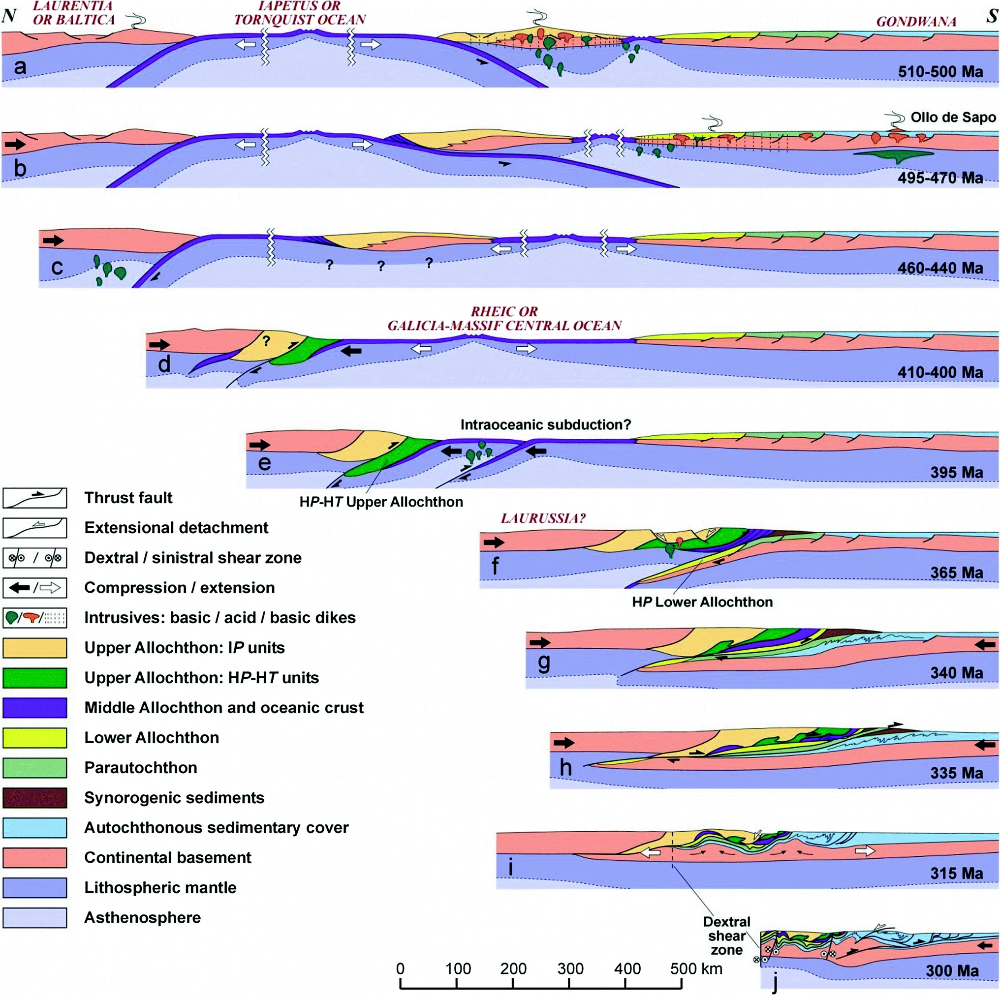

by Romain Tilhac1, Marco A. Lopez-Sanchez2, Sergio Llana-Fúnez2, José Alberto Padrón-Navarta1
1 Instituto Andaluz de Ciencias de la Tierra (IACT/CSIC)
2 Universidad de Oviedo
Updated on 27/09/24 (minor changes are pending)
This is the extended online version (with additional discussion and illustrations) of the field guide that has been edited for the pre-conference excursion of the 7th Orogenic Lherzolite Meeting, held in Oviedo, Asturias, from 30 September to 4 October 2024.
This textbook can be cited in APA citation style as follows:
Tilhac, R., Lopez-Sanchez, M. A., Llana-Fúnez, S. & Padrón-Navarta, J. A. (2024). Field guide to the mantle section of the Cabo Ortegal Complex. Available from https://lherzolite2024.github.io/fieldguide.
The Cabo Ortegal Complex is known to the mantle community for its ultramafic massifs that preserve some of the best outcrops of pyroxenite among orogenic massifs worldwide (Fig. 1.1). The main objective of this two-day excursion is to showcase some of these outcrops, which belong to the high-pressure (HP), high-temperature (HT) units, and get an overview of the geology of the complex.
Fig. 1.1. Layered pyroxenites and dunites in the Herbeira massif of the Cabo Ortegal Complex (Tilhac et al., 2016).
It is noteworthy that most of the Cabo Ortegal Complex is part of the Xeoparque do Cabo Ortegal, officially established as a UNESCO Global Geopark in 2024. This designation aims to promote and preserve the outstanding rock formations and outcrops of the complex, as well as rias, islets, coves, beaches, and lagoons of significant geomorphological interest. The park spans 800 km² of land and marine areas rich in biodiversity, cultural heritage and gastronomic traditions.
The Cabo Ortegal Complex (Vogel, 1967), located in NW Spain, is part of the Iberian section of the Variscan Orogen (Fig. 2.1). Along with the Appalachian (Alleghanian) and Ural belts, the Variscan Orogen records the collision of Laurussia (i.e. Laurentia, Baltica and Avalonia) and Gondwana during the Paleozoic (e.g., Simancas 2019). The Variscan Orogen specifically represents a Late Paleozoic belt that extends from Morocco through Iberia to Central Europe (Fig. 2.1a).
Fig. 2.1. a. Map of the Variscan Orogen in Western and Central Europe prior to Mesozoic times, showing the location of the NW Iberian complexes and other European Variscides. Adapted from Franke (1989), Lefort (1989), Neuman and Max (1989) and Martínez Catalán (2011). Note that the northern front of the orogen (Laurussian realm, in brown), is clearly delineated, particularly from Germany to England and in the SW of the Iberian Peninsula, where the South Portuguese Zone is interpreted as a detached Laurussian terrane. In contrast, the S front of the orogen (Gondwanan realm, in yellow, green and blue), has been significantly reworked in the Cenozoic by the Alpine orogeny, partly hindering the correlation of pre-Mesozoic terranes across Europe. b. Map of the pre-Mesozoic outcrops of the Iberian Peninsula among which the Iberian Massif is the largest. c. Classical tectonic zonation of the Iberian Massif highlighting the allochthonous complexes (in dark green) of the Galicia-Trás-os-Montes Zone (GTMZ), which include the Cabo Ortegal Complex. Based on Simancas (2019).
In the geology of the Iberian Peninsula, the Cabo Ortegal Complex forms part of the Iberian Massif, the largest exposure of pre-Mesozoic rocks in continental Europe (Fig. 2.1b), which here defines an orogen-scale fold (i.e. orocline) with the foreland fold-and-thrust belt at its core. It is more specifically part of the so-called Allochthonous Complexes of the Galicia-Trás-os-Montes Zone (GTMZ; Farias et al., 1987), which include Cabo Ortegal, Malpica-Tuy and Órdenes in NW Spain, Bragança and Morais in Portugal (Fig. 2.1c). These complexes consist of various metamorphic units representing peri-Gondwanan terranes accreted to the Gondwanan margin during the Variscan collision.
The Cabo Ortegal Complex stands out among the Allochthonous Complexes of the GTMZ for preserving the most complete section and best outcrops of high-pressure (HP), high-temperature (HT) metamorphic rocks. It consists of two main tectonic units referred to as the Upper and Lower Tectonic Units (Fig. 2.2), distinguished by their metamorphic grade (Marcos et al., 2002; Arenas et al., 2014a). These units are mostly correlated with the subdivisions of the other allochthonous complexes of NW Iberia and some of the European Variscides (e.g., Martínez Catalán et al., 2019).

Fig. 2.2. Geological map and cross section of the Cabo Ortegal Complex (Arenas et al., 2014; modified after Vogel, 1967, Bastida et al., 1984, Arenas et al., 1986, 2009).
This unit comprises a suite of low- to high-pressure rocks without high-T imprints, interpreted as remnants of the subducted Gondwanan margin and arc-derived rocks of the peri-Gondwanan transitional crust, which were deformed and exhumed in a subduction channel. It is typically divided into three sub-units (e.g., Marcos et al., 2002; Arenas et al., 2014):
Ophiolitic Unit. This unit mostly consists of monotonous amphibolites and Grt-bearing amphibolites of meta-gabbroic origin. They form the Purrido (Sánchez Martínez et al., 2011) and Peña Escrita amphibolites and the Moeche unit, which consists of greenschists with few metagabbroic inclusions (Arenas et al., 2014b). These rocks are interpreted as dismembered slices of ophiolitic units. Their regional significance is far more limited than that of better-preserved ophiolitic units in the other allochthonous complexes (particularly in Órdenes; Arenas, 2015), which allow for the discrimination of two main age groups: Cambro-Ordovician and Early Devonian ophiolites (Martínez Catalán et al., 2019). The Cabo Ortegal occurrences belong to the latter group.
*Somozas Mélange* Unit. This unit is a 500-m-thick sheet of intensely deformed rocks with both continental (meta-igneous and meta-sedimentary blocks) and oceanic (close-packed and broken pillow breccias) affinities. It represents a tectonic, serpentinite-matrix mélange (Arenas et al., 2009; Novo-Fernández et al., 2016, and references therein).
Basal Unit. Poorly exposed in the Cabo Ortegal Complex (Espasante formation), this unit consists of felsic orthogneisses, amphibolites and minor retro-eclogites. It represents parts of the distal Gondwanan margin which record HP metamorphism under low- to intermediate-temperature conditions.
This unit is the main focus of this excursion and is described in detail in Section 3 and 4. It consists of several strongly deformed rock units that have experienced high pressures (> 1.7 GPa) and high temperatures (> 700 ºC). It contains five main mappable rock types: (1) ultramafics (peridotites, pyroxenites and subordinate lithologies); (2) Si-poor Fe-Ti rich rocks (pyrigarnites, pyribolites, hornblendites); (3) Opx-free Grt granulites (mafic to felsic) and amphibolites; (4) eclogites and (5) quartzo-feldspathic gneisses, with variable degrees of retrogression.
Fig. 2.3. Simplified map of the Upper Tectonic Unit (i.e. HP-HT units) of the Cabo Ortegal Complex. Granulites refer to Opx-free Grt granulites and amphibolites. Si-poor granulites refer to the Si-poor Fe-Ti rich rocks (pyrigarnites, pyribolites, hornblendites). See Section 4 for more details. Map based on data from Fernández Pompa and Monteserín López (1972), Fernández Pompa and Fernández Martínez (1974), Bastida et al. (1984), Azcárraga (2000), Mendía (2000), Marcos et al. 2002, Puelles (2004) and own data (M.A. Lopez-Sanchez).
The Si-poor Fe-Ti rich rocks and most of the granulites form together the Bacariza (or Vacariza) formation to the W, whereas the E granulite body is known as the Candelaria formation (see Section 4.1). The eclogites are known as the Concepenido formation. The gneisses occur as the Chímparra gneiss to W, and as the Banded gneiss (and Cariño gneiss) formations to the E (see Section 4.3).
Some authors further divide the Upper Tectonic Unit based on the similarity of their lithological sequence but differing amphibolite facies overprint hindering earlier HP-HT history (e.g., Galán & Marcos, 2000): - La Capelada (or Concepenido-La Capelada) Unit, which includes the ultramafic massifs, Bacariza granulites, Concepenido eclogites and the Banded gneiss formation; - Cedeira Unit, which includes the Chímparra gneiss and the Candelaria and Monte Agudo formations.
In contrast to the Lower Tectonic Unit, the cartographic pattern of the Upper Tectonic Unit shows a consistent lithological sequence, interpreted by some authors as a continuous lithospheric section of lower crust and upper mantle (e.g., Marcos et al., 2002; Brown et al., 2009), while others separate the different mappable units by ductile thrusts (e.g., Ábalos et al., 2003 and references therein).
Ultramafic rocks are mainly exposed in the Herbeira (12.5 km2), Limo (6.6 km2) and Uzal (3.6 km2) massifs (Fig. 3A1), but also in ~40 sparse harzburgitic outcrops within Bacariza granulites, interpreted by some authors as tectonic windows. The massifs are always in contact with granulites except on the W edge of the Uzal massif, where they are in tectonic contact with the Chímparra gneiss.
Minor ultramafic rocks occur along the shear zone (Carreiro shear zone) that represents the W contact between the Upper and Lower Tectonic (Ophiolitic) unit (Vogel, 1967; Azcárraga et al., 2002). Among them, mylonitic garnet (Grt)-facies harzburgites and olivine (Ol) orthopyroxenites have been interpreted as buried serpentinite indicating HP conditions up to 3 GPa (Gil Ibarguchi et al., 1999). These rocks are not further discussed here.
Fig. 3A1 (extended online version only). Simplified map of the HP-HT units of the Cabo Ortegal Complex showing the location of the main ultramafic massifs of Limo, Herbeira and Uzal and other outcrops. Corresponding excursion stops are also shown. Other as in Fig. 2.3.
The ultramafic rocks are primarily composed of harzburgites which dominate in the Limo and Uzal massifs. In contrast, the Herbeira massif preserves a mucher great lithological diversity, including harzburgites, pyroxenites, dunites and chromitites.
As in Limo and Uzal, harzburgites constitute a mantle tectonite in the E part of the Herbeira massif (Fig. 3.1). These rocks are predominantly amphibole (Amp)- and chlorite (Chl)-bearing Spl-facies harzburgites with < 2 % clinopyroxene (Cpx), strongly serpentinized (up to 70 % in extreme cases).
Fig. 3.1. a. Relatively fresh harzburgite outcrop at the bottom of the cliffs near the NW boundary of the Herbeira massif; note the strong foliation outlined by aligned Opx porphyroclasts and Chl-rich trails. b. Serpentinized harzburgite representative of inland exposures in the Herbeira and Limo massifs; c. Detail of bastitized Opx porphyroclasts and Chl in the matrix. d. Strongly serpentinized harzburgite and thin pyroxenites in an inland outcrop (Tilhac, 2017. The harzburgites exhibit a porphyroclastic texture with 5-10mm orthopyroxene (Opx) porphyroblasts embedded in an Ol matrix (Fig. 3A2). They contain up to 30 of Mg-hornblende and < 10 % of Spl occurring as < 5 mm grains. Spinel (Spl), Amp, and Chl, often associated with magnetite (Mag), define the schistosity.
Fig. 3A2 (extended online version only). Typical texture with Opx porphyroclasts in a Cabo Ortegal harzburgite (sample CO-084; Tilhac, 2017). Image size: ~ 3 cm.
Less voluminous peridotitic lithologies such as lherzolites and wehrlites occur sporadically. They are observed with diffuse contacts to pyroxenites in the pyroxenite-rich domain, in the mantle tectonite at the bottom of the Herbeira cliffs (Fig. 3.2) and associated with dunite and chromitites above the pyroxenite-rich domain. They were described as “impregnated” dunites and harzburgites by Girardeau & Gil Ibarguchi (1991).
Fig. 3.2. Loose boulder exposing an example of "impregnated" (Cpx-rich) harzburgite with green Srp-rich veins and boudinaged pyroxenite layers in the Herbeira massif near Punta Robaliceira (Tilhac, 2017).
Pyroxenites are particularly abundant (80–90%) in a 3-km long, 300-m-thick domain (potentially consisting of one or several lenticular bodies) exposed in the W cliffs of the Herbeira massif (see Section 6.1 and Fig. 6.1). They generally occur interlayered with dunites or as massives outcrops with lateral extension of individual layers exceeding 100 m (Girardeau et al., 1989; Girardeau & Gil Ibarguchi, 1991). The Cabo Ortegal pyroxenites have been classified based on their field occurence as follows (Fig. 3.3; Tilhac et al., 2016, Tilhac, 2017):
Fig. 3.3. Representrative outcrops of the different types of pyroxenites in the Herbeira massif (Tilhac, 2017).
Representative modal compositions are approx. 30–80 % Cpx, 0–45 % Opx, 5-40 % Amp, 2–8 % Spl, 6–7 % Grt when present, < 1 % base-metal sulfides and 1-2 % Chl when present. Olivine is mostly restricted to type-1 and type-4 pyroxenites. Cpx/Opx ratios decrease from type-1 and-3 pyroxenites through type-2 to type-4 pyroxenites (Fig. 3.4). Amphibole is most abundant in type-3 pyroxenites and least abundant in type-1 pyroxenites.
Fig. 3.4. Modal compositions of the different types of pyroxenites in Cabo Ortegal. Thin layers (< 5-cm thick) are indicated as their modal composition may be strongly affected by mechanical mixing with the host peridotites (Tilhac et al., 2016).
Extended online version only
The Cabo Ortegal pyroxenites have medium- to coarse-grained granoblastic to porphyroclastic textures (Fig. 3A3). Pyroxenes (Cr-diopside and enstatite) occur as 1-5 mm exsolved porphyroclasts with complex boundaries and as 50–800 μm exsolution-free neoblasts. Olivine either occurs as relatively fresh dunitic lenses, as interstitial trails associated with Spl and Amp, or as inclusions in pyroxene (Px). Orthopyroxene, Cpx, Amp and Chl all have well developed crystal-preferred orientation (CPO; e.g., Henry et al., 2017).
Fig. 3A3 (extended online version only). Cross-polarized light images illustrating the textures and mineral assemblages in the Cabo Ortegal pyroxenites (Tilhac et al., 2016). a. Trails of interstitial Ol in a porphyroclastic Ol websterite (type 1). b. Porphyroclastic websterite (type 2). c. Abundant Amp replacement along cleavages in a Cpx porphyroclast and in the matrix of a clinopyroxenite (type 3). d. Granoblastic websterite (type 2). e. Abundant Amp replacement along grain boundaries in a granoblastic websterite (type 3). f. Kinked Opx porphyroclasts in an Opx-rich websterite (type 4). Note the Amp (I) in textural equilibrium with Px (d).
Spinel is found as rounded enclosed grains and large (rarely idiomorphic, but often exsolved; Fig. 3A5) interstitial grains, associated with sulfides. It is also observed as part of a mesh of exsolved needles associated with Px and Amp. This mesh commonly delineate curved-shaped domains with Px porphyroclasts leaving exsolution-free rims and halos around Spl grains(Fig. 3A4).
Fig. 3A4 (extended online version only). Cross-polarized light images illustrating different Spl occurences in the pyroxenites (Tilhac, 2017). a-c. mesh of Spl exsolution covering parts of Cpx grains and leaving exsolution-free domains (a-b) or halos around Spl inclusions (c). d-f. Vermicular Spl associated with Amp.
Fig. 3A5 (extended online version only). Reflected light images (Tilhac, 2017) of large interstitial Spl with brighter exsolution aligned along cracks and grain boundaries (a) or, less commonly, darker exsolution patterns (b).
Garnet occurs only in some massive websterites (type 2), either in equilibrium with Px, as coronas around Spl (Fig. 3A6) or with symplectites of Spl and pyroxenes (± Amp, Ilm; Fig. 3A7).
Fig. 3A6 (extended online version only). Example of undeformed Grt corona around Spl in a type-2 pyroxenite (sample CO-024; Tilhac et al., 2016). Note the thin layer of Amp along the Spl-Grt boundary. a. Plane-polarized light image. b Back-scattered electron (BSE) image.
Fig. 3A7 (extended online version only). BSE images a symplectite after Grt breakdown in a type-2 pyroxenite (sample CO-024; Tilhac et al., 2016). a. Overview of the symplectitic assemblage. b. Detailed view of the association of Fe-rich Spl and Ilm (Tilhac, 2017).
Amphibole occurs either as pre- to syn-kinematic xenomorphic grains in textural equilibrium with Cpx (Amp I; (Fig. 3A3d). or more commonly as clearly post-kinematic (i.e. internally undeformed), replacing Cpx (± Spl) among matrix minerals, often as idiomorphic crystals (Fig. 3A8c-f). It is locally associated with vermicular Spl (Fig. 3A4d-f) and replacing Px exsolution lamellae (Fig. 3A8a-b) . These two textural generations, confirmed by electron back-scattered diffraction (EBSD) data, are respectively interpreted as evidence of late-magmatic crystallization of residual melts (Amp I) and of hydration and retrograde metamorphism (Amp II). Extreme cases of amphibolitization produce hornblendites with poikilitic textures.
Fig. 3A8 (extended online version only). Textural relationships of replacive Amp (II) in pyroxenitesa-b. Replacement initiated along Cpx cleavaged. c-f Sub-idiomorphic to idiomorphic Amp grown within variously recrystallized Cpx-rich matrix, including within Cpx grain (d). Note the Spl exsolution mesh restricted to parts of Px porphyroclasts and vermicular Spl associated with Amp. Images in cross-polarized (a-d) and plane-polarized light (e-f) from Tilhac (2017).
Accessory Chl occurs often associated with Spl after or in textural equilibrium with Amp (Fig. 3A9). Base-metal sulfides are relatively fresh (< 20 % of alteration products such as Fe oxyhydrodrides) and occur as either rounded homogeneous inclusions in silicates or more commonly large interstitial grains exsolving pyrrhotite (Po), pentlandite (Pn) and chalcopyrite (Ccp), particularly when associated with Amp (Fig. 3A10). Rare platinum-group minerals (PGM) have been found, mainly Pt– Pd-rich tellurides, bismuthides and arsenides, hosted as needles in sulfides (Tilhac, 2017).
Fig. 3A9 (extended online version only). Cross-polarized light images (Tilhac, 2017) illustrating textural relationships of Chl in the pyroxenites, associated with Amp (a) and Spl (b).
Fig. 3A10 (extended online version only). Reflected light images (Tilhac, 2017) illustrating the textural relationships of enclosed (a-b) and interstitial (c-d) base-metal sulfides in the pyroxenites. Note the low dihedral angle and association with Spl (a) and Amp (b). Pn, pentlandite; Po, pyrrhotite; Ccp, chalcopyrite.
In the Herbeira massif, dunites outcrop alternately with pyroxenites and chromitites or as massive outcrops (Fig. 3.6). It is the most common lithology above (i.e. upper dunite of Moreno et al., 2001), and to a lesser extent, below (i.e. lower dunite) the pyroxenite-rich domain (see Fig. 6.1). Transition to the pyroxenite-rich domain is gradational, showing a downward and upward decrease in the frequency of distinctively weathering pyroxenite layers. In massive dunite outcrops, thin, partially "dissolved" pyroxenite layers suggest that a generation of pyroxenites predates dunitization (Fig. 3.5). Dunite occurs less commonly as decameter-size pods with diffuse contacts within harzburgites (Santos et al., 2002), notably associated with chromitites at the beach level in the Herbeira cliffs (Moreno et al., 2001).

Fig. 3.5. Chromite precipitated via incongruent melting or dissolution of pyroxenes at the termination of a pre-existing pyroxenite layer in the lower dunite near Punta Robaliceira (Tilhac, 2017).
Despite being foliated, Cabo Ortegal dunites are less deformed and serpentinized than the harzburgites. Both the upper and lower dunites exhibit serpentinized mm-size Ol porphyroclasts and small neoblasts. Sporadic Opx and large (> 3 mm) Cpx grains occur interstitially, as well as Amp, Chl and locally phlogopite (Phl). A variety of accessory minerals has been reported (Monterrubio Pérez, 1991; Monterrubio Pérez et al., 1992), including Mag, Pn, Ccp, Po and heazlewoodite (Hzl).
Chromian Spl occurs as elongated grains outlining the foliation. In the lower dunite, it is restricted to disseminated grains and rare, thin chromitite layers. In the upper dunite, it is much more abundant and occurs concentrated in pods, lenses or layers > 10-cm thick (Monterrubio Pérez et al., 1992) and irregular concentrations (schlieren) up to 50-cm thick (Moreno 1999; Moreno et al., 2001).
Fig. 3.6. a & b. Massive (type-I) chromitites in the upper dunite, near on the edge of the Herbeira cliffs, where most of the chromitites are observed. c & d. Semi-massive (type-II) chromitites associated with pyroxenite in different locations of the Herbeira massif (Tilhac, 2017).
Chromitite occurences in the upper dunite have been classified as follows (Garcia-Tudela et al., 2024):
Extended online version only
In chromitites, Chr grains occur in a matrix of serpentine (Srp) and Chl. They may exhibit thin Fe-rich alteration rims and inclusions of Cpx, Amp, sulfides (mainly Pn and Ccp) and PGM (near grain boundaries in type II), as well as Chl and locally Ap in type-I and Ol in type-II chromitites. Detailed study of the PGM revealed a remarkably diversity of primary and secondary platinum-group sulphides, alloys, arsenides and other minerals (Moreno et al., 1999; Tilhac, 2017, Garcia-Tudela et al., 2024; Fig. 3A11)
Fig. 3A11 (extended online version only). BSE images (Tilhac, 2017) illustrating the diversity of platinum-group minerals (PGM) in the Cabo Ortegal chromitites. Note the common occurrence within sulfides or Chr of zoned irarsite (a-c) and laurite-erlichmanite (c-d), single crystals of arsenide (e) and large PGE-rich aggregates associated with serpentine (f).
Mafic rocks occur as a 3–5 m thick outcrop near the top of the pyroxenite-rich domain, parallel to the main foliation (Girardeau & Gil Ibarguchi, 1991). It exhibits 5-20-cm granoblastic layers of Grt, Zo and minor Cpx, alternating with layers rich in Amp ± Zo or Spl. Kyanite (Ky) inclusions in Zo and Spl and corundum (Crn) inclusions in Grt have been reported (Santos et al., 2002). K-feldspar (Kfs) and plagioclase (Plg) are rare accessory minerals. A gradual transition is observed between these rocks and Grt clinopyroxenite with Rt partly replaced by titanite (Ttn) and minor Ilm. These lithologies originally described as a gabbroic facies by Girardeau et al., (1989) are most likely unrelated to the main pyroxenites (see Section 3.2).
Other lithologies include pyroxenite and Grt-rich dykes injected in C’-like tensional fractures (Girardeau et al., 1990; Girardeau & Gil Ibarguchi, 1991), which commonly occur cross-cutting the compositional layering at a high angle (>30°) in the pyroxenite-rich domain (Fig. 3.7). These dykes are only deformed in mylonitic bands near the contacts with underlying granulites (see Stop 1.7), sealed in turn by undeformed pyroxenite dykes injected in Riedel fractures (Girardeau & Gil Ibarguchi, 1991), particularly abundant in the upper dunite.

Fig. 3.7. a. Field pictures of an Opx-rich rimmed pyroxenite dyke cross-cutting layered pyroxenites and dunites on the ridge of Punta Robaliceira. b. Branching pyroxenite dyke injeted in a shear zone at the beach level of the Herbeira cliffs (Tilhac, 2017).
Extended online version only
A historical review of the different interpretations proposed for the origin of the ultramafics is provided below.
1960-70s: lherzolitic mantle diapirs
The Cabo Ortegal Complex was originally studied by a group of Dutch researchers who published a series of comprehensive articles describing the geology and petrology of the different units (Vogel, 1967, Masskant, 1970, Engels, 1972, Den Tex et al., 1972), mostly published in the journal edited by Leiden University Leidse Geologische Mededelinge. This group also published the earliest geochemical and isotopic studies of the complex (Van Calsteren, 1978, 1979), including data obtained from a 150-m drilled core (one of the six boreholes drilled in the Herbeira massif by Chartered Exploraciones). The multiphase tectonothermal history of the HP-HT units was recognized early on as a significant impediment to understanding the origin of the ultramafic massifs:
« Speculations about the origin of the ultrabasites are doomed to be fruitless in view of the various geological processes to which these rocks have been subjected. » (Vogel, 1967)
The great debate of this time hinged on wether the different rocks of the complex were autochthonous (Van Calsteren and co-workers) or allochthonous (e.g., Matte and co-workers; Ries & Shackelton, 1971), which prevailed latter on. The protoliths of Cabo Ortegal peridotites were inferred to be a lherzolite where Cpx has been replaced by hornblende (Masskant, 1970). Their emplacement was ascribed to one or several diapirs segregated from a mantle plume either along an oceanic geotherm (Maaskant 1970) or into the continental crust, thus responsible for granulites-facies metamorphism of originally eclogitic lower crust (Van Calsteren et al., 1977). The different pyroxenites were regarded as in-situ partial melting products of the lherzolite.
1980-90s: heterogeneity of the upper mantle.
More work was carried out in the 1980s and 1990s by Spanish and French collaborations (Arenas et al., 1986; Bernard-Griffiths et al, 1985; Gil Ibarguchi et al., 1990; Peucat et al., 1990), notably focusing on the ultramafic massifs (e.g., Girardeau et al., 1989; Girardeau & Gil Ibarguchi 1991), as part of two PhD theses (Ben Jamaa, 1988; Laribi-Halimi, 1992). Other PhD theses include that of Gravestock (1992), who studied the geochemistry of the pyroxenites, re-investigating the drilled core studied by Van Calsteren and co-workers, as well as the granulites and eclogites.
From then on, the peridotite protoliths were considered as a Spl-harzburgite (ascribing part of the amphibolitization to near-isochemical retrograde hydration). They were interpreted as a residual oceanic mantle owing to its depleted mineral chemistry (Girardeau & Gil Ibarguchi, 1991, Laribi-Halimi, 1992), potentially representing imbricated tectonic slices of a subducted slab (Gil Ibarguchi et al., 1990). However, relatively low εNd (~ +4) measured in a harzburgite compared to the N-MORB-like eclogites with εNd (~ +10) and the occurrence of hundreds of meters of pyroxenite were problematic in such an oceanic setting (Ben Jamaa, 1988). A sub-continental influence and back-arc setting were thus envisaged (Peucat et al., 1990). In this context, the intrusion of external melts reacting with the ambient peridotite was recognized as a more reasonable scenario to explain the observed amount of pyroxenites (Girardeau et al., 1989; Girardeau & Gil Ibarguchi, 1991; Gravestock, 1992).
2000s: lower-crustal arc-root cumulate
Following the work of Monterrubio Pérez (1991), who included the Herbeira massif as part of his broader study on mineralization in ultramafic rocks of the Variscan belt of Spain, Moreno (1999) focussed her PhD on the Herbeira chromitites. The layered pyroxenite-dunite-chromitite association exposed in the cliffs was interpreted as the magmatic stratigraphy of a lower-crustal cumulate in an arc root (Moreno et al., 2001), based on increasing platinum-group element (PGE) contents (i.e. from the PGE-poor lower dunite to the PGE-rich upper dunite) and progressive PGE fractionation towards Pd-Pt enrichment (Fig. 3A12) in the chromitites.

Fig. 3A12 (extended online version only). a. Sketch depicting the stratigraphic interpretation of the W part of the Herbeira massif as a lower-crustal cumulate sequence based on increasing PGE enrichment and fractionation (Moreno et al., 2001). Representative PGE distributions (chondrite-normalized) are shown along with the highest concentration obtained at each location. b. Map showing the corresponding chromitite sample locations; note the location of the suggested Trans-Herbeira Fault (THF; see Stop 1.7). Location 2 corresponds to chromitite-bearing dunite pods in harzburgite (Moreno et al., 2001).
This arc-related interpretation provides a better explanation to the residual character of the harzburgites which was confirmed by Santos et al. (2002) based on mantle-array-like Ol chemistry (i.e. ~ 0.4 % NiO, Fo90). These authors also identified a fractional crystallization trend of decreasing NiO and Fo in Ol between the pyroxenites and dunites (see Fig. 3A13). Overall, they considered the lithological heterogeneity of the Herbeira massif as derived from a mantle wedge modified by slab-derived fluids or melts.
In this context, the subordinate Grt-rich mafic rocks, relatively Al- and Ti-rich, are clearly unrelated to the main pyroxenites (see Fig. 3A15). They also exhibit positive Eu, Sr and Ba anomalies and high alkali contents suggesting the former presence of Plg (Santos et al., 2002).
Fig. 3A13 (extended online version only). Covariation diagram showing a joint decrease in NiO and Fo contents in Ol from harzburgite through dunite to type-1 (and type-4) pyroxenites (Tilhac et al., 2016).
Following on the original work by Girardeau and co-workers, the ultramafic massifs were recently re-investigated as part of two PhD theses (Tilhac, 2017, Henry 2018). A petrogenetic model combining magmatic differentiation and melt-peridotite interaction was formulated based on the classification of the pyroxenite subtypes and new geochemical data (Tilhac et al., 2016, 2017, 2020). In this classification, the strongly foliated and amphibolitized (type-3) pyroxenites are ascribed to deformational, metamorphic and metasomatic overprints. Accordingly, their petrogenesis is specifically discussed as part of the tectonothermal evolution of the massifs (Section 5) and in the description of Stop 1.3.
The Cabo Ortegal pyroxenites have markedly higher SiO2, CaO, Cr and Sc contents and lower Al2O3, TiO2 and Ni contents than pyroxenites from most ultramafic massifs (e.g., Horoman, Ronda, Beni Boussera, Lanzo, Lherz). High concentrations of compatible elements (e.g., Cr2O3 > 0.4%) and low-Al pyroxenes suggest that they crystallized from primitive, low Al/Si parental melts. The petrogenetic model proposed by Tilhac (2017) specifically invokes the intrusion into a lithospheric arc root of a primitive Si-undersaturated melt, interacting with the host harzburgites to produce dunites and chromitites, as well as Ol-bearing, Cpx-rich pyroxenites (type 1), which represent incomplete replacement products of the peridotites (Fig. 3.8). Massive Ol-free websterites (type 2) either represent more differentiated products of this process and/or cumulates of a distinct, Si-saturated melt (Tilhac et al., 2016).

Fig. 3.8. Schematic representation of the model proposed by Tilhac (2017) for the main magmatic episode in the petrogenesis of Cabo Ortegal pyroxenites, dunites and chromitites, assuming an initially Si-undersaturated (a) and/or Si-saturated (b) melt. Note that the spatial association of chromitites and type-4 pyroxenites had not been identified by Tilhac (2017) and is thus not well reflected. Some aspects depicted in this model are here refined in a two-stage model (picritic then boninitic). "Dissolved" pyroxenite layers (Fig. 3.5) interpreted as an older generation may rather correspond to type-1 pyroxenites affected by stage-2 dunitization, depending on the extent of Ol fractionation of the more Si-rich, stage-2 melt (Tilhac et al., 2016).
Extended online version only
In this model, whether type-1 and type-2 pyroxenites are cogenetic was left as an open question and is discussed in detail below. Two scenarios involving different parental melts were proposed for type-2 pyroxenites (Tilhac et al., 2016):
Evidence in favour of their cogeneticity (Fig. 3.8a) includes relatively homogeneous radiogenic isotope compositions consistent with a single batch of parental melt (e.g, Gravestock, 1992; Santos et al., 2002; Tilhac et al., 2017). Mineral chemistry also suggests that the pyroxenites could mostly be related to the same melt differentation/melt-rock interaction trend (e.g., Fig. 3A15). However, the high Mg# and Cr# of the Opx-rich (type-4) pyroxenites is problematic in this case.
Evidence against their cogeneticity (Fig. 3.8b) consists of field observations on large outcrop surfaces exposed on the shore at the bottom of the Herbeira cliffs. Massive (type-2) pyroxenites are seen as thick and layers, relatively undeformed compared to type-1 and type-3 pyroxenites (Fig. 3A14), which cannot be fully accounted for by deformation localization away from thick pyroxenite layers. In addition, the high Mg# and Cr# of type-4 pyroxenites and their association with chromitites point to a very primitive character, suggesting that they are more likely to be related to type-2 pyroxenites (see Stop 1.4).
Fig. 3A14 (extended online version only). Outcrop on the shoreline at the bottom of the Herbeira cliffs exposing field relationships between different types of pyroxenites (Tilhac, 2017). (a.) Overview of the outcrop highlighting the massive field occurrence of type-2 pyroxenites contrasting with branching type-1 pyroxenites in the upper part of the outcrop (b.) Detail view of strongly deformed pyroxenite-dunite association showing foliated type-3 pyroxenites and shear zones associated with late pyroxenite dykes.
Based on the considerations above, the latter scenario (two subsequent melt intrusions) is here preferred and summarized below (Fig. 3A15):
A Si-undersaturated melt such (e.g., ultra-calcic picrite) led to the formation of dunites and branching veins of replacive Ol clinopyroxenites (type 1) preserving dunite lenses (see Stop 1.2). Some websterites locally formed at higher melt/rock ratios.
A more Si-rich melt (e.g., boninite) led to the formation of primitive orthopyroxenites (type-4) and the more evolved, massive websterites (see Stop 1.2 & 1.3)
Fig. 3A15 (extended online version only). Covariation diagram of Al2O3 vs Mg# in Cpx of type-1 pyroxenites (a) and type-2 and -4 pyroxenites (b), corresponding to stage-1 melt-peridotite interaction and stage-2 differentation trends, respectively. Note that both trends are relatively Al-poor compared to the Grt-rich mafic rocks, and to a lesser extent, some of peridotites.
In this scenario, chromitites are most likely associated with the boninitic stage 2 following a crystallization sequence of Ol + Cr-Spl > Opx > Cpx expected for instance for low-Ca boninite (Crawford et al., 1989). Type-4 pyroxenites are indeed mostly observed near chromitites. However, it cannot be excluded that chromitites also formed during stage 1.
This petrogenetic model is compatible with the conclusion from Moreno et al., (2001) that the chromitites crystallized from a S-poor, mantle-derived melt. Indeed, the abundance of sulfides (up 1 %) cannot be accounted for by the low S contents of boninitic or picritic melts. Accordingly, a secondary S addition is suggested by the textural association between interstitial sulfides and Amp (Tilhac et al., 2020). The two-stage scenario described above could also be consistent with the interpretations of Garcia-Tudela et al. (2024) invoking two distinct parental melts (i.e. a fore-arc basalt and a boninite) for the chromitites. However, the latter relies on the questionable assumption that Al2O3 and TiO2 contents in Chr are not affected by subsolidus re-requilibration. This aspect is further discussed in Stop 1.6.
The occurrence of Grt as relatively undeformed coronas around Spl in the main pyroxenites is indicative of syn- to post-kinematic prograde metamorphism. Peak conditions under eclogite-facies conditions have been calculated at 1.6-1.8 GPa and 780-800 °C (Girardeau & Gil Ibarguchi, 1991, Tilhac et al., 2016). Similar conditions are recorded by the late pyroxenite and Grt-rich dykes (Girardeau & Gil Ibarguchi, 1991) which were probably intruded near peak conditions.
Amphibolitization of the peridotites and pyroxenites suggests an episode of retrograde metamorphism (and hydration). Corresponding P-T conditions have not been calculated in the ultramafic massifs, but probably correspond to amphibolite-facies conditions (~ 0.8 GPa, 500 °C; Ábalos et al., 2003) documented in other HP-HT units of the complex, although calculations based on Amp compositions yield lower pressure (~ 0.4 GPa; R. Tilhac, unpublished).
As in the other HP-HT units of the Cabo Ortegal Complex, two main age clusters have been identified in the ultramafic massifs.
A first cluster at ~ 390 Ma is particularly well documented by zircon (Zrn) and rutile (Rt) U-Pb ages of 383-392 Ma, notably in a Grt clinopyroxenite vein in the Uzal massif (Peucat et al., 1990; Santos Zalduegui et al., 1996; Ordóñez Casado et al., 2001). It overlaps with WR Rb-Sr and K-Ar ages of 386-401 Ma obtained for the Herbeira peridotites (Van Calsteren et al., 1979; Kuijper et al., 1982) and a U-Pb isochron age of 400 ± 26 Ma reported for the peridotites, pyroxenites and Grt-bearing mafic rocks. The latter also yielded Sm-Nd isochron ages of 392-394 Ma (Santos et al., 2002).
This cluster is coeval with the HP-HT metamorphic event documented by U-Pb and 40Ar/39Ar ages of 382-395 Ma in the adjacent HP-HT units (Santos Zalduegui et al., 1996, Ordóñez Casado et al., 2001; Gómez Barreiro et al., 2007), associated with a well documented Devonian subduction. In the ultramafic massifs, it also dates the peak of HP metamorphism as well as the formation of cross-cutting pyroxenite veins and other intrusive bodies. Among them, a pegmatitic granite intruded into the Uzal peridotite provide a minimum age for the ultramafic massifs at 387-388 Ma (Santos Zalduegui et al., 1996)
A second age cluster at ~ 500 Ma was first recognized by Rb-Sr ages of 477 ± 122 Ma for the Herbeira peridotites (Van Calsteren et al., 1979) and Sm-Nd ages of 493-506 Ma for the pyroxenites (Santos et al., 2002). It was recently confirmed by Sm–Nd ages of 459–515 Ma (Tilhac et al., 2017), including an external isochron at 474 ± 59 Ma defined by the variously LREE-enriched pyroxenite subtypes (see Stops 2 and 3). The latter remarkably coincides with an isochron age of 459 ± 84 Ma calculated for an increasingly LREE-enriched sample (CO-010; Fig. 6.11), whose enrichment probably relates to the percolation of residual websteritic melts, as discussed in Section 3.2.
This cluster is comparable to U-Pb zircon ages of 480-520 Ma reported in other HP-HT units and interpreted as related to the formation of most of the granulites and eclogite protoliths in a Cambrian oceanic domain and Ordovocian arc, respectively (Peucat et al., 1990; Ordóñez Casado et al., 1996; 2001). Tilhac et al., (2017) interpreted these ages in the ultramafic as representing minimum estimates, owing to the potential partial reset of the Sm-Nd system associated with amphibolitization. Second-stage Nd model ages of 502–762 Ma indeed suggest that some of Cabo Ortegal peridotites and pyroxenites could be older than 500 Ma (Tilhac et al., 2017). This is consistent with the Re-depletion model age (τRD) of 588 Ma obtained for a harzburgite. A Re-Os isochron age at 838 ± 42 Ma was also obtained from the samples most preserved from Re addition associated with amphibolitization and supergene alteration (Tilhac et al., 2020), which preferentially affected low-Mg#, low-Cu/S pyroxenites.
The granulites of the Cabo Ortegal Complex occur in three distinct areas: the Bacariza formation* (to the E), which is the largest and best-preserved, and the Monte Agudo (to the S) and Candelaria (to the W) amphibolites, which are characterized by a higher Amp contents (Fig. 4A1).

Fig. 4A1 (extended online version only). Map of the Upper Tectonic unit of the Cabo Ortegal Complex showing the location of the HP granulites (Bacariza formation) and the amphibolitized HP granulites of Candelaria and Monte Agudo. Corresponding excursion stops are also shown.
The Bacariza granulites outcrop between the Concepenido eclogites to the E and the ultramafic massifs to the W (see Fig. 2.3). Both amphibolite formations are in contact with the HP paragneisses, and the Candelaria amphibolites are additionally in tectonic contact with other non-HP-HT units along the Carreiro shear zone to the W.
The contacts between the granulites and the ultramafic massifs have been interpreted in different ways: some authors describe them as ductile thrusts (Ábalos et al., 2003; Puelles et al., 2005), while others propose non-tectonic lithological conformities that could represent a crust-mantle transition (Galán & Marcos, 1997, 2000; Marcos et al., 2002).
The Cabo Ortegal granulites are characterized by two main features:
Lack of Opx and high Grt contents: This is typical of HP granulites. They display highly variable contents of Cpx, Amp and Plg, defining them as Opx-free Grt granulites.
Wide compositional range: The granulites show significant compositional variation, ranging from ultramafic to acidic compositions (Fig. 4.1).
Fig. 4.1. Total Alkali-Silica (TAS) diagram showing the wide compositional variation of the Bacariza granulites. The different source references are shown (left) as well as different facies and field occurences (right). Unpublished data from the OUTCROP project (M.A. Lopez-Sanchez; SV-PA-21-AYUD/2021/57163).
Additionally, Cabo Ortegal granulitic formations contain Si-poor rocks Fe-Ti-rich rocks primarily composed of Cpx, Grt, and pargasitic Amp in variable proportions (Figs. 2.3 & 4.2). In the Bacariza formation, these Fe-Ti-rich rocks form a continuous layer along the contact with the Uzal peridotite massif to the W and the Opx-free granulites to the E (Fig. 2.3). In Monte Agudo, they are enclosed in Opx-free, Amp-rich granulites and bound by a tectonic contact to the S, leaving their overlying unit unobserved. These Si-poor Fe-Ti-rich rocks also occur in all three formations as elongated lenses parallel to the tectonic foliation embedded in the granulitic matrix (see Fig. 4.2c).
This excursion includes the *Bacariza granulites, which are the best-preserved examples within the Cabo Ortegal Complex. Apart from some volumetrically minor and exotic types, such as leptynitic gneisses, calcite-rich granulites (Fig. 4.3e), and Mg-rich granulites (Galán & Marcos, 2000; Puelles, 2004), the Bacariza granulites can be grouped into five primary types based on their silica content, ranging from ultramafic to acidic compositions:
Si-poor (ultramafic to mafic) Fe-Ti-rich rocks. These coarse- to medium-grained rocks are bi- or tri-mineralic, consisting primarily of Grt-Cpx-Prg, with Pl+Qtz content < 5 %. They range from dominant pyrigarnites (Vogel, 1967), composed mainly of Cpx-Grt, to pyribolites (Cpx-Amp) or horblendites (Amp) with all grades in between (Fig. 4.2a).
Grt-rich mafic granulites. This is the dominant granulite facies in Cabo Ortegal, often referred to as layered granulites, owing to the contrasting appearance of mafic and Plg-rich layers. These rocks are coarse- to medium-grained, with Amp content > 5 %. Clinopyroxene ranges from augite to omphacite, and Amp from pargasite to pargasitic hornblende (Fig. 4.2b).
Grt-rich amphibolites. These are also coarse- to medium-grained layered granulites, but almost Cpx-free (Fig. 4.2c). They are intermediate rocks and occasionally exhibit evidence of partial melting.
Grt-bearing trondhjemitic gneisses. These acidic rocks are volumetrically less abundant but not rare. They are observed crystallised in situ or as cross-cutting cm-thick veins (Fig. 4.2d).
High-pressure migmatitic gneisses. Also referred to as granulitic orthogneiss, these rocks range from mafic to acidic compositions and outcrop between the Limo and Herbeira peridotitic massifs(Fig. 2.3).
Fig. 4.2. Appearance of the various facies of Opx-free Grt granulites inthe Bacariza formation. a. Thin sections illustrating mineral variations in the Si-poor Fe-Ti-rich rocks, ranging from Grt-rich pyrigarnites (sample 15XY), Grt-Cpx-Amp assemblages (sample 30BXY), to 90% Amp-Cpx pyribolites (sample 12XZ), and predominantly Amp-rich rocks (30AXZ). b. Aspect of the Opx-free Grt granulites often referred to as layered granulites owing to mafic and Pl-rich bands. c. Intermediate layered granulite including a pyrigarnite boudin and a Grt-rich band (Puelles et al., 2005). d. Grt-bearing trondhjemitic vein cross-cutting deflected tectonic foliation in a pyrigarnite. e. Calcium-rich granulites containing pyrigarnite blocks. Inset: Plane-polarized light image of Grt and clinopyroxene and calcite in a Ca-rich granulite (Puelles 2004).
Various origins have been proposed for these rocks, including: (1) residues of deep anatexis (Drury, 1980), (2) upper crust of a volcanic arc near a continental margin or continental tholeiites (Peucat et al., 1990), (3) crystal fractionation from melts derived from a primitive mantle source (Gravestock, 1992), or (4) a stratiform gabbroic complex at the base of an extended continental crust (Galán & Marcos, 1997). Although no consensus exists, all the above interpretations suggest a sub-continental or arc-related tectonic environment.
Maximum pressures in the high-pressure migmatites have been established between 1.9-2.3 GPa at temperatures of 815-865 °C (Beranoaguirre et al., 2020). These pressures are comparable to those reached in the Concepenido eclogites, but at relatively higher temperatures. Peak conditions for mafic granulites range between 1.6-2.0 GPa and 740-950 °C, depending on the method used (Gil Ibarguchi et al., 1990; Galán & Marcos, 2000; Puelles et al., 2005; Spránitz et al., 2023). Pyrigarnites yielded peak conditions of 1.7 GPa and 800°C (Gil Ibarguchi et al., 1991).
U-Pb geochronology (zircon, titanite, rutile) yields two distinct age clusters. The first cluster at 372-392 Ma is interpreted as the peak of HP metamorphism and associated partial melting during a subduction event (Santos Zalduegui et al., 1996; Fernández-Suárez et al., 2002; Beranoaguirre et al., 2020). The second cluster at 459-497 Ma is interpreted by most authors as the age of the magmatic protolith, although it may also represent an earlier metamorphic event (Fernández-Suárez et al., 2002; Beranoaguirre et al., 2020).
The Cabo Ortegal eclogites form a continuous band approximately 20-km long, known as the Concepenido formation, which is among the longest eclogite outcrops in the world (Ábalos, 1997). The formation thickness vary from 100 to 700 m. It is sandwiched between Opx-free Grt granulites to the W and HP paragneises to the E, with which they are partly associated (Fig. 4A2).
Fig. 4A2 (extended online version only). Map of the Upper Tectonic unit of the Cabo Ortegal Complex showing the location of the Concepenido eclogites. Note the Ky-bearing eclogites occuring within the main eclogite body. Corresponding excursion stops are also shown.
Fresh eclogite samples typically consist of 40-55 % Cpx, 25-35 % Grt, 2-10 % Qtz, ≤ 10 % Zo, 4-7 % Amp, 1-3 % Rt and ≤ 1 % Phl (Mendia 1996). Locally, Grt can dominate (up to 85 %) in centimetric bands. However, most eclogites are Zo-Amp eclogites. Eclogites also show local evidence of partial melting. Three types are distinguished (Mendia, 1996):
Fig. 4.3. Hand samples of Cabo Ortegal eclogites. Top: Appearance of common eclogites on fresh (right) and altered (left) surfaces. Bottom: Appearance of Ky-bearing eclogites on fresh (left) and altered (right) surfaces.
Common eclogites (i.e. volumetrically dominant ~ 70 %): These range from massive, lacking lineation and exhibiting a weak foliation, to strongly deformed mylonitic LS-tectonites. Garnet typically ranges in size from 1 to 3 mm, but can exceptionally exceed 2 cm (Fig. 4.3). They exhibit very homogeneous N-MORB-like major and trace-element compositions (Fig. 4.4).
Ky-bearing eclogites: These eclogites are strongly deformed and systematically contain Ky. They appear lighter in color compared to common eclogites and contain larger Grt and Cpx, ranging from several mm up to 6 cm (Fig. 4.3). These rocks are enriched in Al and Mg compared to the common eclogites.
Ferro-titaniferous eclogites: Representing less than 5 % of the total volume, these eclogites are richer in Fe and Ti. Although they appear similar to common eclogites, they contain more Rt and their minerals are more ferrous.
Fig. 4.4. Total Alkali-Silica (TAS) diagram for the common Concepenido eclogites (left) and Ky-bearing eclogites and eclogitic lenses within adjacent HP gneisses (right). The common eclogites display highly homogeneous basaltic compositions, while the Ky-bearing eclogites show greater compositional variability.Unpublished data from the OUTCROP project (M.A. Lopez-Sanchez; SV-PA-21-AYUD/2021/57163).
The eclogites display tight, km-scale folds that are inferred from geological mapping and are, in some cases visible at the scale of hundreds of meters (see Stop 2.5).
The common eclogites are interpreted as a metamorphosed piece of N-MORB-like diabasic dikes and gabbros derived from the oceanic crust (Bernard-Griffiths et al., 1985), though significant continental contamination has been suggested (Gravestock, 1992). The Ky-bearing eclogites are interpreted as Plg-rich troctolitic cumulates (Gil Ibarguchi et al., 1991), while ferro-titaniferous eclogites are interpreted as differentiated products of a tholeiitic series (Mendia, 2000).
Peak metamorphic conditions for both common and Ky-bearing eclogites correspond to ~ 1.7-2.3 GPa and 770-800 °C (Mendia, 2000; Mendia et al., 2001). Retrograde metamorphism is recorded by amphibolitization and the appearance of Plg at ~ 600 °C and 1.2-1.6 GPa (Mendia, 2000).
Zircon U-Pb dating shows an age cluster around 390 Ma (middle Devonian), interpreted as the timing of eclogitization (Ordóñez Casado et al., 2001). Older ages of 470-495 Ma (late Cambrian to early Ordovician) (Bernard-Griffiths et al., 1985; Peucat et al., 1990; Schäfer et al., 1993; Ordóñez Casado et al., 2001) are ascribed to the formation age of the mafic protoliths for both common and Ky-bearing eclogites.
High-pressure gneisses occur as two mappable formations: the Banded (to the E) and the Chímparra (to the W) gneisses (Fig. 4A3). Although some geological maps treat them as distinct units, they share many similarities and are here considered together. Both are characterized by highly deformed Grt- and Ky-bearing quartzo-feldspathic gneisses, including lenses of retrogressed eclogites, Grt pyroxenites, and granulites. These formations display strong deformation features and evidence of partial melting. The main distinction is that the Banded gneiss also contains tonalitic orthogneisses and occasional coronitic metagabbros.
Fig. 4A3 (extended online version only). Map of the Upper Tectonic unit of the Cabo Ortegal Complex showing the location of the HP gneiss formations. Note that some authors interpret parts of the E gneiss body (i.e. Cariño gneiss formation) as a separate intermediate pressure (IP) unit (e.g. Albert 2012) separated from the Banded gneiss by an extensional fault (Albert, 2012) or a normal contact (Puelles, 2004). Others (e.g., Fernández et al., 2016) do not distinguish these units and simply consider a strong metamorphic and deformational gradient (1.2 GPa and 700 ºC in the Cariño gneiss is vs 1.5-1.7 GPa and 800-900 ºC in the rest of the Banded gneiss).
The Chímparra gneisses are interpreted as pelitic and semi-pelitic (graywacke-like) sediments with minor calc-silicate and mafic inclusions (Fernández, 1994). In contrast, the Banded gneisses are interpreted as a shallow crustal volcano-sedimentary sequence (Albert, 2017), punctuated by mafic intrusions (now eclogites) and lesser granitic and tonalitic bodies (now orthogneisses)
The Chímparra gneiss reached peak metamorphic conditions of 1.5-1.7 GPa and 800-900 °C (Fernández, 1994; Fernández & Marcos, 1997).
Zircon provenance studies indicate that the sediments forming these gneisses are younger than 515 ± 15 Ma (Ordóñez Casado et al., 2001; Albert et al., 2015; Albert, 2017). Felsic dykes hosted in the Banded gneiss have yielded Zrn and Mnz U-Pb ages of 475-485 Ma (early Ordovician), interpreted as the age of their intrusion into the sediments (Fernández et al., 2016). Accordingly, the paragneisses represent middle- to late-Cambrian sediments. On the other hand, U-Pb ages on Zrc, Mnz and Rt in leucosomes dated the migmatisation at 382-394 Ma (middle Devonian), matching the U-Pb Zrc ages from the eclogite lenses (390-393 Ma) and orthogneisses (395 Ma) within the Banded gneiss (Valverde Vaquero and Fernández 1996; Fernández et al., 2016; Albert, 2017).
The geological record before and, to a lesser extent, after the assemblage of the HP-HT units is still the subject of intense debate. In the extended online version of this guide, we intend to reflect the different points of view in more detail.
We attempt below to provide a brief summary of the origin and evolution of the ultramafic massifs in the context of the Upper Tectonic Unit. It takes into account field observations, tectono-thermal and geochronological constraints from the different HP-HT units.
Many lines of evidence indicate that the ultramafic massifs record magmatic activity in a subduction-related environment. The layered pyroxenite-dunite-chromitite association of the Herbeira massif is specifically ascribed to primitive picritic and boninitic melt intrusions into lithospheric root of a volcanic arc (Moreno et al., 2001, Tilhac et al., 2016). High CaO/Al2O3, low TiO2 and alkalis in the pyroxenites more specifically indicate a low Cpx/Opx (i.e. harzburgitic) mantle, metasomatized by slab- or mantle-wedge derived hydrous fluids, silicate melts (Tilhac et al., 2016) or carbonatites (Gravestock, 1992), in good agreement with the characteristic enrichment of the LREE and large ion lithophile (LILE) enrichment over depleted high field strength elements (HFSE).
Accordingly, a continental volcanic arc setting was suggested for the granulite protoliths (Peucat et al., 1990) and the occurrence of Si-poor Fe-Ti rich rocks comparable to arclogites is also compatible with this interpretation. Such a lithological sequence (Fig. 5.1) is observed in the deep sections of young and modern arc (Ducea et al., 2021, and references therein). Many lithological features of the Herbeira massif are also similar to the Jijal ultramafic section of the famous Kohistan arc complex in Pakistan (e.g., Muntener et al., 2001; Tilhac et al., 2022). Some of the Jijal pyroxenites preserving dunite lenses were similarly interpreted as partial replacement of peridotite (Burg et al., 1998; Garrido et al., 2007) and the chromitites compositionally overlap those from Cabo Ortegal (Moreno et al., 2001).
Fig. 5.1. Hacker diagram of the different HP-HT units of the Cabo Ortegal Complex. The observed compositional trends are comparable to the volcanic (negative correlation between MgO and SiO2) and plutonic (positive correlation) trends reported in recent and modern volcanic arcs. Unpublished data compilation from the OUTCROP project (M.A. Lopez-Sanchez; SV-PA-21-AYUD/2021/57163). Data sources: peridotites from Maaskant (1970), van Calsteren (1978), Gravestock (1992), García-Izquierdo (2005) and Pereira et al. (2008); pyroxenites from van Calsteren (1978), Gravestock (1992), García-Izquierdo (2005), Santos et al. (2002), Brown et al. (2005) and Tilhac et al. (2016); granulites and eclogites as in Fig. 4.1 and 4.4.
Extended online version only
Whether the ultramafic massifs are cogeneitic to the granulites, and that they both relate to a volcanic arc is not consensual, in spite of the geochemical (e.g., Sr & Nd isotopes) similarities between the ultramafics and granulites (e.g, Gravestock, 1992). For instance, Ábalos et al. (2003) only related the granulites to a Cambro-Ordovician arc whereas the ultramafics were ascribed to a Laurrusian mantle edge.
In addition, the nature and location of the crust-mantle transition in the Upper Tectonic Unit remains unclear. Two main alternatives can be envisaged depending on the approach considered:
On geochemical grounds, Moreno et al., (2001), considered the layered pyroxenite-dunite-chromitite association as a cumulate sequence that preserves a magmatic stratigraphy (notably based on the evolution of PGE concentrations; see Fig. 3A12 in Section 3.2). In this context, the base of this association that overlies harzburgite at the bottom of the Herbeira cliffs is interpreted as the crustal-mantle transition (Fig. 5A1). This interpretation assumes that the pyroxenite-dunite-chromitite association in the W part of the Herbeira massif is in tectonic contact against the E part which is mostly harzburgitic. As such, it is conditioned to the questionable tectonic significance of the Trans-Herbeira Fault (THF), as discussed in detail in Stop 1.7.
Alternatively, the ultramafic massifs and granulites were interpreted as representing the crust-mantle sequence of an early Ordovician extended continental margin (Galán & Marcos, 1997), inverted by a recumbent fold (Bastida et al., 1984; Marcos & Galán, 1994). On geophysical grounds, Brown et al., (2009) and Llana-Fúnez & Brown et al., (2012) considered the whole Upper Tectonic Unit as analogue to a sub-continental mantle-crust transition, where the seismic Moho (i.e. strong P-wave reflector at around 8 km/s) corresponds to the contact between the eclogites and the quartzo-feldspathic gneisses (Fig. 5A1). In this context, the petrologic Moho is ascribed to the contact between the ultramafic massifs and the granulites, which corresponds to the appearance of Ol-rich rocks. Note that, among the ultramafics, only the pyroxenites yielded mantle-like P-wave velocities whereasserpentinized peridotites did not reach the 8 km/s threshold in direct measurements. Llana-Fúnez & Brown et al., (2012) also showed that the breakdown of Cpx to Plg strongly lowers seismic velocities in both the granulites and eclogites. This effect smoothes out the seimic discontinuity at the eclogite-gneiss contact (seismic Moho), enhancing the reflectivity of the ultramafic-granulite contact (petrological Moho).
Fig. 5A1 (extended online version only). a. Geological map of the Cabo Ortegal Complex focusing on the Upper Tectonic Unit showing the location of the samples analysed for P-wave and S-wave velocities. b. Synthetic lithostratigraphic column (from Llana-Fúnez et al., 2004) showing reflection coefficients, average Vp and density (ρ) for each unit. c. Synthetic vertical incidence seismic reflection section. Adapted from Brown et al. (2009).
Interestingly, the latter interpretation, which followed on previous works by Galán, Marcos and co-workers, is compatible with the formation of the layered pyroxenite-dunite-chromitite association within the mantle (Girardeau et al., 1989; Gravestock 1992, Tilhac et al., 2016), as the whole ultramafic massifs are considered as mantle rocks.
Regionally, a similar sub-arc environment was proposed for the origin of the chromitite-dunite association in the nearby Bragança Complex in Portugal, interpreted as a product of partial melt extraction in the shallow mantle (Bridges et al., 1995). The magmatic history depicted above fits with the activity of Cambro-Ordovician (at ca. 500 Ma) to Neoproterozoic arc (Fig. 5.2), potentially corresponding to the incipient stage of a Cadomian arc built on a rifted margin of Gondwana (Tilhac et al., 2017), as previously invoked in NW (Andonaegui et al., 2016) and SW Iberia (e.g., Rojo-Pérez et al., 2024; Novo-Fernandez et al., 2024). Arc magmatism on the Gondwanan margin facing the Tornquist (or possibly the Iapetus) Ocean is further supported by detrital zircons derived from the West African which yielded prominent age peaks at around 2.1 and 2.7 Ga (Santos Zalduegui et al., 1995; Albert et al., 2015; Roper 2016). In the Iberian Autochthon, thick sedimentary sequences due to high rates of subsidence and the voluminous volcanics of the Ollo de Sapo formation record early-Ordovician extension interpreted as continental rifting during the separation of the arc from the Gondwanan margin (e.g., Martínez Catalan et al., 2019, and references therein).

Fig. 5.2. Interpretative tectonic evolution of NW Iberia (Martínez Catalan et al., 2019; modified from Martínez Catalan et al., 2009 and references therein). Note that the Upper Allochthon (d-j, in lime green) essentially corresponds to the Upper Tectonic Unit defined in this guide, whereas the Lower and Middle Allochthon correspond to the Lower Tectonic Unit. The peri-Gondwanan arc inferred for the origin of the ultramafic massifs is shown in a, although this version of the geodynamic model only relates it to the IP units of the Upper Allochthon.
In the Cabo Ortegal Complex, the reworking of a Gondwanan margin during arc magmatism provides a consistent scenario to account for the radiogenic isotope compositions of the pyroxenites (and granulites). This data include decoupled Hf-Nd with εHf exceeding + 100, corresponding to Paleoproterozoic to Archean Hf model ages (Tilhac et al., 2020), as well as moderately enriched (i.e. EM1) Pb, Sr and Nd isotopes (Gravestock 1992; Santos et al., 2002; Tilhac et al., 2017).
The ultramafic massifs have experienced high-temperature shear deformation DHT (Ábalos et al., 2003) at > 1000 °C which predates the so-called D1 deformation phase common to all the HP-HT units (Fig. 5.3). It is recorded by the preservation of some A-type (Jung & Karato, 2001) crystal-preferred orientation (CPO) in Ol, as evidenced by early petrofabric studies (Ben Jamaa, 1988; Girardeau & Gil Ibarguchi, 1991, Girardeau et al., 1990). This deformation episode is responsible for a tectonic foliation parallel to the compositional layering as well isoclinal folding and boudinage, particularly outlined by pyroxenites (Fig. 5.4).
Fig. 5.3. P–T–t paths of the Cabo Ortegal granulites: a. according to Galan & Marcos (2000) and showing the metamorphic stages numbered M1-M4; b. according to Puelles et al. (2005) and showing the deformation stages numbered D1-D4 (specifically for Bacariza granulites). In a, two distinct paths are shown for the Monte Agudo and Bacariza (i.e. La Capelada) formations, respectively. and b correspond to the prograde and retrograde paths of the Concepenido eclogites. In b are also shown paths of the upper oceanic crust aged 5 Ma (a), 10 Ma (b) and 50 Ma (c).
Recent EBSD studies have shown that B-type and, to a lesser extent, AG-type patterns dominate in the Limo and Herbeira peridotites (García-Izquierdo, 2005; García-Izquierdo et al., 2011; Puelles et al., 2012; Henry et al., 2017; Henry, 2018, M.A. Lopez-Sanchez, unpublished). The B- and AG-type patterns are typical of low-T mantle deformation (~ 850 °C on average) with a dominant component of flattening strain (e.g., Bernard et al., 2019), and likely hydrated environments. Pyroxenites show predominantly weak B-type and odd patterns (Henry et al., 2017; Henry 2018). The inferred transition from A- to B- and AG-types suggest that the initial HT deformation in the peridotites has been largely overprinted (see Fig. 5.7).

Fig. 5.4. Representative examples of HT deformation features (Tilhac, 2017): typical boudinage of a pyroxenite layer in the Herbeira cliffs (a) and isoclinal fold outlined by a pyroxenite layer (b).
Fig. 5.5. Summary of crystallographic preferred orientations (CPO) measured in different lithologies of the Herbeira massif (modified from García-Izquierdo 2005). B-types are found in the pyroxenite-rich domain while AG-types are found in the Chl-Amp harzburgites. CPO patterns not conforming to the typical Ol patterns are seen in the mylonitic Chl-rich harzburgites exposed at Punta Robaliceira.
All the HP-HT units of the Cabo Ortegal Complex record a metamorphic episode (M1) under eclogite facies conditions which peaked at 1.6-1.8 GPa in the pyroxenites and up to 2.3 GPa in the eclogites (Fig. 5.3 & 5.6). In the ultramafic massifs, it corresponds to the appearance of Grt in massive websterites as well limited partial melting evidenced by rare cross-cutting pyroxenite veins (Peucat et al., 1990) and intrusive granite bodies (Santos Zaldueguí et al., 1996).
In all the HP-HT rock types, eclogite-facies minerals define a widespread and pervasive tectonic fabric D1, as illustrated for the granulites in Fig. 5.3. D1 was roughly coeval to the metamorphic peak and related to a Devonian subduction (e.g., Ábalos et al., 2003). In the ultramafic massifs, D1 postdates DHT and is recorded by a mylonitic foliation. The latter is ascribed by some authors to the thrusting of the ultramafic massifs onto the granulites, in turn interpreted as reflecting a ductile thrust separating the mantle wedge from the subduction channel (Ábalos et al., 2003). For Marcos et al. (2002), the D1 mylonitic foliation is thought to have developed specifically during exhumation from HP-HT conditions to amphibolite facies, favoured by the breakdown of Cpx into Plg, a much weaker phase in the presence of Grt, Px and Amp.
Fig. 5.6. Summary of peak metamorphic conditions recorded in the different HP-HT units. See Section 3 and 4 for references.
Until recently, sheath folds ascribed to high-shear strain deformation in deep subduction settings (Ábalos et al., 2003) had been recognized in several rock types of the Upper Tectonic Unit (Azcárraga et al., 2002), but not in the ultramafic massifs. Limo was initially described as structurally homogeneous (Ben Jamaa, 1988; Girardeau & Gil Ibarguchi, 1991; García-Izquierdo et al., 2011) due to the strong alteration of most outcrops inland. However, good exposures of harzburgites were found in the NW cliffs revealing large-scale stacking of extremely elongated sheath folds (Puelles et al., 2012). Such folds were then found affecting both peridotites and pyroxenites in the Herbeira massif (Fig. 5.7; Tilhac et al., 2016, Tilhac, 2017), indicating that the massif underwent the corresponding deformation episode as an entity, and that formation of the main pyroxenites predates this deformation episode.
Fig. 5.7. Exemples of sheath folds in the ultramafic massifs. a. Sheath fold elongation along N20° on a Google Earth image of the harzburgite outcrops near sea level on the SW of the Punta Robaliceira (Herbeira massif). b. Sigmoidal shapes of one of these sheath folds; N20° orientation is shown for reference. Note the abundant fractures oriented ca N110° which truncate the tubular structures of the sheath folds to be observed perpendicular to the lineation. c. Detail of Chl-rich harzburgite and pyroxenite as seen on one of these fractures. Note the L-type tectonite aspect revealed by differential weathering. d-e Eye shape and sigmoidal shape of sheath folds at the bottom of the Limo cliffs (Puelles et al., 2012). f. Sigmoidal shape of a sheath fold affecting pyroxenites and dunites in the lower part of Herbeira cliffs, as shown in Fig. 6.1 (Tilhac et al., 2016). Photo credit: R. Tilhac.
Tilhac et al. (2016) suggested that the sequence of DHT (i.e. potentially asthenospheric deformation), followed by D1 (high-shear strain deformation) and the peak of prograde metamorphism corresponds to the delamination of the arc root and its incorporation into the Devonian subduction zone. Foundering is thought to have occurred because of the negative buoyancy of the arc root, owing to the large amount of ultramafic pyroxenites denser the ambient mantle (Müntener et al., 2001). Assuming that the ultramafics and the granulites originated from the same volcanic arc (as discussed in Section 5.1), the presence of Si-poor Fe-Ti rich rocks (e.g., pyrigarnites) may have additionnally contributed to the gravitational instability of the arc root. These dense lithologies known as "arclogites" are indeed considered as some of the most likely candidates to undergo delamination in arc root settings (Ducea et al., 2021).
The Herbeira massif of Cabo Ortegal Complex could thus represent a unique example of delaminated arc root, potentially including the deep lithospheric portion of the sub-arc mantle. The modalities and timing of this hypothesis and its consequences for the geodynamic reconstruction of NW Iberia (e.g, Fig. 5.2) are still to be explored. In particular, it remains unclear whether DHT records solely asthenospheric mantle wedge conditions during delamination and/or an earlier deformation history.
Fast exhumation seems to have rapidly followed the HP event (~1 GPa in < 10 Ma; Albert et al., 2012). There seems to be an overall agreement on the fact that the different HP-HT units formed a unique assemblage by ca. 375 Ma (Marcos et al., 2002; Ábalos et al., 2003; Albert et al., 2012). Their final emplacement on the Iberian parautochthon occurred at ca. 360 Ma (Dallmeyer et al., 1997).
Extended online version only
The timing and processes that led to the assembly of the HP-HT units and aspects of their exhumation related to the evolution of the Variscan orogen remain debated. They are discussed in more detail below.
According to some authors, the granulites, eclogites and paragneisses were stacked via ductile thrusts (D2) in a subduction channel, which resulted in cartographic km-scale sheath folds (e.g., Ábalos et al., 2003; Albert et al., 2012). On the W side of the complex, the Carreiro shear zone (Azcárraga et al., 2002) which includes mylonitic ultramafics is ascribed to this deformation episode. This interpretation has mainly been based on the tectonothermal evolution of the eclogite-facies Banded gneiss (Fig. 5A2) and cross-correlations with structures in the Órdenes Complex (Martínez Catalán et al., 2002).
Fig. 5A2 (extended online version only). Different stages of exhumation of the HP-HT units interpreted from the tectonothermal evolution of the eclogite-facies gneisses (Albert et al., 2012): a. development of a regional mylonitic foliation; b. syn-convergence extensional detachments and c. recumbent folds and thrusts; d. idealized cross section of the Cabo Ortegal Complex. Note that important inconstencies exist between this exhumation model and the P-T-t paths shown above (e.g., Fig. 5.5b). For instance, folding here occurs during exhumation under amphibolite facies (c), which contrasts with the model of Ábalos and co-workers upon which it all occurs at HP (D1-D2; see Section 5.2).
Alternatively, some authors regarded the granulites and eclogites as already belonging to a lower continental crust thinned during Ordovician extension, and later involved in a subduction (Galán & Marcos, 1997). Accordingly, most of the widespread deformation of the Upper Tectonic Unit occurred during the exhumation of this pre-existing sequence (Marcos et al., 2002). The dominant flattening of the HP-HT units was specifically interpreted as resulting from thinning of the subducting slab down to < 1 km-thick during slab breakoff (Llana-Fúnez et al., 2004; Fig. 5A3).
Fig. 5A3 (extended online version only). D2 stage (390–380 Ma) of exhumation according to Fernandez et al. (2016). a. Retrograde P–T-t paths for different subfacies of gneisses (migmatites, metasedimentary quartzo-feldspathic gneisses and mafic granulites) compared to current subduction zones. b. Illustration of the slab breakoff model of Llana-Fúnez et al., 2004), accounting for the eclogitization of the the top of the mafic granulites during a widespread thinning of the tectonic sequence.
There is little record of D2 (and subsequent episodes) in the ultramafic massifs, apart from the isoclinal folding of the Uzal peridotites and Bacariza granulites. However, several observations indicate that the peridotites were still relatively hot (e.g., Gayk & Kleinschrodt, 2000). For instance, near the contact with the Uzal peridotites, the Chimparra gneisses provide extensive evidence of partial melting dated at 391 ± 8 Ma (Ordóñez Casado et al., 2001) and textures resembling those of high-grade contact metamorphism (Ábalos et al., 2003, and references therein).
Development of recumbent folds and of a basal thrust (D3) accompanied retrograde metamorphism under amphibolite-facies conditions (including amphibolitization of the hydrated peridotites and pyroxenites). D3 recumbent folds are additionally affected by upright folds without axial planar foliation (D4) such as the large open synform observed in the Bacariza granulites and in the Herbeira massif (Bastida et al., 1986; Marcos et al., 2002; Fig. 6.1). This last episode, potentially coeval with development of the THF, occurred under greenschist-facies conditions (Ábalos et al., 2003).
This first day focusses on the Herbeira massif, which is the largest and most lithologically heterogeneous ultramafic massif of the Cabo Ortegal Complex (Fig. 6.1). It is split into three parts:
Fig. 6.1. Location of the stops of the first day on the interpretative geological map of the Herbeira massif (Tilhac et al., 2016, and references therein). Stop 1.5 is located in the Uzal peridotite massif (not shown). a. Sheath-fold deformation cross-cutting lithological contacts. b. Area related to the Trans-Herbeira Fault surrounding the gradual contact between dunites and harzburgites, along the axial surface of the synform. Fault lines correspond either to strike-slip faults (continuous lines) or contacts (thrust patterns) with granulites. Cross sections sampled by Girardeau et al., (1989) and Tilhac et al. (2016) are numbered 1-3 with the corresponding synthesic log shown for section 2. Note that the synformal structure of the massif is partly conditionned by the dunite body mapped along the SE boundary of the massif (Puelles et al., 2012). Outcrops that support the existence of this dunite are mostly limited to the area of the Mina David, an open pit mine exploited by Pasek Minerales. The extracted material indeed has a homogeneous content of 37 % MgO (Caballero et al., 2009) consistent with dunite compositions measured in the cliffs area (Tilhac et al., 2016). Yet, it is also reported with a relatively high Opx content (Baragaño et al., 2019), which suggests that the protolith may actually harzburgitic, unless it relates to the incorporation of pyroxenite layers. The extracted material, so-called "dunite HT", is combined with periclase to produce high-temperature solid solutions which serve as a refractory material in thermal power plants, steel manufacture and other applications.
coordinates: 43°43'25.15"N, 7°56'44.73"W
The first stop of the day is the lookout of the Vixía Herbeira (613 m), the highest point of the Sierra de la Capelada and one of the highest sea cliffs in Europe (Fig. 6.2). Its iconic landmark, the Garita de Herbeira (literally "Herbeira’s watchtower"), a stone construction from the 18th century, was part of a series of coastal watch posts. The current building, entirely made of ultramafic rocks, dates from 1805 and was renovated in 2003.
Fig. 6.2. a. View of the top part of the Herbeira cliffs below the Vixía Herbeira. b. View of the Punta Robaliceira from the Vixía Herbeira. Note the meaningfull name "Herbeira" for this very grassy area, derived from the Galician word herba (grass). Photo credit: R. Tilhac.
Structure of the Herbeira massif. From this point, we introduce the main lithological variations of the massif (Fig. 6.1):

Fig. 6.3. View of the Herbeira cliffs from Punta Robaliceira. Sheath folds occurred in harzburgites in the foreground and in the pyroxenite-rich domain in the bottom-right corner of the cliffs. The Vixía Herbeira is located in the very top-left corner of the picture. Photo credit: R. Tilhac.
coordinates: 43°43'18.13"N, 7°56'52.33"W
This outcrop (Fig. 6.4) is an example of Ol-bearing clinopyroxenites which preserve dunite lenses (classified as type-1 pyroxenites of Tilhac et al., 2016).
Fig. 6.4. a. Outcrop of type-1 pyroxenite in the upper dunite, near the edge of the Herbeira cliffs. b. Detail view. Photo credit: M.A. Lopez-Sanchez.
Type-1 pyroxenites are likely to represent an early generation of pyroxenite in Cabo Ortegal (see Section 3.2). They are along with type 4 the most primitive types of pyroxenites, with 20-24 % MgO, 2-3 % Al2O3 and high Mg# of 87–89 (Cpx Mg# > 91; Fig. 3A15). Type-1 pyroxenites plot along the Fo-An join within the nepheline-normative, silica-deficient field in the Fo-CaTs-Qz projection (Tilhac et al., 2016). Such a trend towards the Fo apex is ascribed to melt-peridotite interaction in orogenic pyroxenites (Bodinier et al., 2008; Lambart et al., 2012).
Fig. 6.5. Example of type-1 pyroxenite sample interlayered with dunite (Tilhac, 2017). Note the Ol-rich streak preserved within the thickest pyroxenite layer.
In Cabo Ortegal, these pyroxenites are specifically interpreted as products of partial replacement of peridotites upon interaction with a Si-undersaturated melt inferred to be a ultra-calcic picrite. This interpretation is consistent with their high Cpx/Opx ratios which point to crystallization along a Cpx–Ol cotectic line. The incomplete remplacement reaction is indicated by the preservation of dunite lenses (Fig. 6.5), suggesting that melt was the limiting reactant. Consistently, rare A-type (high-T) CPO patterns have been observed in type-1 pyroxenites (Henry et al., 2017). Relatively low melt/rock ratios are supported by the lowest Amp contents among the pyroxenites (6-14 %) as well as LILE and LREE enrichment limited to spoon-shaped patterns with flat heavy REE (HREE) (Fig. 6.10). Yet, the occurrence of Ol-free type-1 pyroxenites (including websterites) suggests that complete consumption of Ol was locally achieved following a peritectic reaction Fo + Si-rich melt = En, indicating pressures < 1.2 GPa (e.g., Kelemen & Ghiorso, 1986).
coordinates: 43°43'13.79"N, 7°56'57.46"W
After passing by an isoclinal fold (Fig. 6.6), we reach the area of Stop 1.3, where reach the first chromitite outcrop of the day and most of Cabo Ortegal pyroxenite subtypes.

Fig. 6.6. Isoclinal fold hinge outlined by a pyroxenite layer between Stop 1.2 and 1.3. Photo credit: R. Tilhac.
Outcrop 1.3A
The first outcrop of this stop is a sequence of several irregular layers or schlieren of nodular chromitites hosted in dunite. They extend laterally over several m with an individual thickness ranging from single grains to 3-4 cm (Fig. 6.7). This occurrence corresponds to the semi-massive (< 80 % Chr), high-Cr# (75–82) chromitite (type II, Fig. 6.8) of Garcia-Tudela et al. (2024), which was classified in a broad group of Chr-rich dunite (< 75 % Chr) by Moreno et al. (2001).
Fig. 6.7. a. Chromitite schlieren in dunite. b. Detailed view of the nodular (semi-massive) texture of the chromitite. Photo credit: R. Tilhac.
Garcia-Tudela et al. (2024) suggested that the parental melt of the semi-massive (type-II) chromitites was a boninite using empirical calculations based on the Al2O3 and TiO2 contents of Chr, as further discussed in Stop 1.4 and 1.6.
Fig. 6.8. Example of semi-massive chromitite sample associated with dunite and pyroxenite (Garcia-Tudela et al., 2024).
Outcrop 1.3B
Walking W, we encounter among other pyroxenite layers an example (not pictured here) of massive websterite (comparable to type-2 pyroxenites of Tilhac et al., 2016). Most occurrences of this type are found in the central part of the pyroxenite-rich domain, where massive outcrops reaching several m in thickness can be observed (e.g., Fig. 6.9).
Fig. 6.9. a. Among the best example of massive (~ 3-m-thick) Spl-/Grt-facies pyroxenite (sample CO-006; Tilhac et al., 2016) from the Herbeira cliffs (not included in this excursion. b. Fresh cut of a type-2 pyroxenite sample (Tilhac, 2017).
Type-2 pyroxenites are likely to represent a latter generation of pyroxenites than type 1. They are more evolved with 20-21 % MgO, 3-6 % Al2O3 and Mg# of 83-88 (Cpx Mg# of 88-92; Fig. 3A15). Type-2 pyroxenites plot along the En-CaTs join on the Fo-CaTs-Qz diagram (Tilhac et al., 2016), similarly to experimental pyroxenitic cumulates of hydrous basaltic andesite and high-Mg# andesite at 1.2 GPa (Müntener et al., 2001). Their Ol-free, lower Cpx/Opx modal compositions suggest that they crystallized from a Si-saturated (boninitic) melt, most likely distinct from the picritic melt parental to type-1 pyroxenites, as discussed in Section 3.2. However, some websterites (type 2) may represent more advanced product of the melt-peridotite interaction that produced type-1 pyroxenites at the expense of locally higher melt/rock ratios.
Higher and more variable melt/rock ratios in type-2 pyroxenites are indicated by variable LREE enrichment over nearly flat HREE (Fig. 6.10), ascribed to chromatographic re-equilibration with incompatible-element enriched residual melts (Tilhac et al., 2016). This enrichment was potentially enhanced by porosity-reducing crystallization of hydrous residual melts, as suggested by higher proportions of Amp in type-2 pyroxenites (5-26 %), a process similar to the percolative fractional crystallization model of Harte et al., (1993).
Fig. 6.10. Chondrite-normalized REE compositions of Cpx and Amp from the different subtypes of Cabo Ortegal pyroxenites (Tilhac et al., 2016).
Outward percolation of excess residual melts metasomatized the host peridotites as well as pre-existing, type-1 pyroxenites. Tilhac et al. (2016) described a composite sample of type-1 pyroxenite that exhibits increasing Amp contents and progressive LREE and LILE enrichment (Fig. 6.11). Formerly classified as a transitional sample between type-1 and type-3 pyroxenite, this sample probably represents the deformed product of a type-1 pyroxenite protolith mesomatized by late-magmatic websteritic melts. Accordingly, Gravestock (1992) also reported a positive correlation between the amount of pyroxenites and the extent of LREE enrichment in the harzburgites.
Fig. 6.11. Profile of REE compositions in Cpx across a composite type-1 pyroxenite (CO-010) showing an extreme, small-scale (< 10 cm) REE fractionation characteristic of chromatographic re-equilibration. Note the wehrlite streak preserved within the pyroxenite layer on the left-hand side (Tilhac et al., 2016).
Outcrop 1.3C
Continuing towards the cliff edge, we reach the last outcrop of this stop (not pictured here), an example of strongly foliated pyroxenites (type 3 of Tilhac et al., 2016).
These pyroxenites are characterized by the highest modal proportions of Amp (8-43 %) among Cabo Ortegal pyroxenites. Their major-element compositions overlap with those of type-1 and type -2 pyroxenites. Most type-3 pyroxenites mimic the high MgO of type 1 wheras others reach similarly high Al2O3 as type-2 pyroxenites (Fig. 6.12). However, they differ in having a higher Na2O, K2O (up to 0.8-0.9 %) and systematically LREE-enriched patterns with negative MREE-to-HREE slopes (Fig. 6.10).
Fig. 6.12. Covariation diagram of Al2O3 vs Mg# in Cpx showing type-3 pyroxenites overlaping the range of Mg# of the other types (particularly type 1). Note their lower Al2O3 interpreted as the result of subsolidus re-requilibration (arrow) of Cpx with higher proportions of Amp. Modified from Tilhac et al. (2016).
Most type-3 pyroxenites are interpreted as the deformed and hydrated (amphibolitized) products of the other two types, preferentially type-1 pyroxenites. Dunite lenses and layers may have indeed provided preferential pathways for fluids percolation and deformation localization in type-1 pyroxenite protoliths (Fig. 6.13).
Fig. 6.13. Sketch depicting the model proposed by Tilhac (2017) & Henry et al. (2017) for the formation of type-3 pyroxenites, preferentially from on a protolith similar to those of type-1 pyroxenites; increasing deformation by axial compression and shear eventually stacks pyroxenites layers (1 & 2) creating preferential pathways for fluid percolation and amphibolitization (3).
Where sheath folds affect pyroxenites (in the lower part of the pyroxenite-rich domain), the latter are systematically of type 3, and particularly strongly amphibolitized (e.g., Fig. 6.14). This observation suggests that most of the hydration was syn-kinematic of the high-shear strain deformation episode and that metamorphic amphibolitization (which produced undeformed idiomorphic Amp) is mostly post-kinematic, potentially contemporaneous to the regional amphibolite-facies metamorphism.
Fig. 6.14. Example of complete amphibolitization into a hornblendite (Tilhac, 2017).
coordinates: 43°42'56.80"N, 7°57'17.83"W
We reach the area around Stop 1.4 where most of the chromitite outcrops of the Herbeira massif are encountered. This area was mapped in detail by Monterrubio Pérez (1991) (Fig. 6.15), who first discovered platiniferous chromitite here. Chromium and Pt concentrations were measured along trenches dug by the Empresa Nacional Adaro de Investigaciones Mineras (ENADIMSA), one the ancestors of the Spanish geological survey. Subsequent investigation of these chromitites by Moreno (1999) revealed concentrations > 13 000 ppb ΣPGE, with Pt and Pd being much more concentrated (10 900 ppb) than Os, Ir and Ru (< 1365 ppb).
Fig. 6.15. Map of the chromitite-rich part of the upper dunite, where dunite alternates with diffuse bands of wehrlite. The edge of the Herbeira cliffs and the corresponding part of the itinerary and stops are shown for reference. The top of cross section 3 from Girardeau et al., (1989) is also shown. Adapted and translated from Monterrubio Pérez (1991).
Outcrop 1.4A
The main outcrop is one of the most spectacular massive chromitite of the Herbeira massif, which features oblique cross sections through a sequence of irregular chromitite layers sandwiched between layered pyroxenites and dunites (Fig. 6.16). It also yielded some of the highest PGE concentrations measured in the Cabo Ortegal chromitites.
Fig. 6.16. 3D model of the outcrop exhibiting massive chromitites hosted in dunite (left-hand side) in between alternating layers of pyroxenites and dunites (right-hand side), dipping to the right (SW). Unpublished model realized from 60 field pictures processed using the software Agisoft Metashape. Credit: R. Tilhac & H. Henry.
This occurrence corresponds to the massive (> 80 % Chr), intermediate-Cr# (60–66) chromitite (type I) of Garcia-Tudela et al. (2024), classified as chromitites sensu stricto (i.e. > 75 % Chr) by Moreno et al. (2001). The parental melt of these chromitites is inferred to be fore-arc basalt based on empirical calculations from the Al2O3 and TiO2 contents of Chr (Garcia-Tudela et al., 2024). This interpretation is further discussed along with the origin of the rest of Cabo Ortegal chromitites in Stop 1.6.
Outcrop 1.4B
About 50 m away, we encounter the second outcrop of this stop which exhibits among the best examples of Opx-rich websterites and orthopyroxenites (Fig. 6.17; type-4 pyroxenites of Tilhac et al., 2016). It is noteworthy that this type is abundant in the area, often spatially associated with chromitites, while it is relatively rare in the rest of the Herbeira massif except, but to a lesser extent, in the lower dunite exposed in Punta Robaliceira.
Fig. 6.17. Outcrops of coarse-grained type-4 pyroxenites in the upper dunite, near the massive chromitite outcrop. Photo credit: R. Tilhac.
Type-4 pyroxenites exhibit the highest Mg# (and Cr#) and lowest Al2O3 of all types of Cabo Ortegal pyroxenites. They are interpreted as the most primitive products of the low-Ca boninite parental to type-2 pyroxenites (and possibly also of the chromitites, as suggested by their spatial association with type-4 pyroxenites). Indeed, the combination of their Opx-rich and primitive characters is incompatible with the picritic parental melt inferred from type-1 pyroxenites. This interpretation is consistent with the highly variable REE compositions of their Cpx, comparable to the extremely depleted and enriched endmembers of type-2 pyroxenites (Fig. 6.10). This is an expected chromatographic consequence of the lower modal proportions of Cpx in type-4 pyroxenites (e.g., Godard et al., 1995).

Fig. 6.18. a-c. Typical occurrences of type-4 pyroxenites as coarse-grained centimetric to decimetric pods in the upper (pictured) and lower dunites. d. Large (~ 5 cm) single Opx in werhlitic part of the upper dunite. Photo credit: R. Tilhac.
The field occurrence of type-4 pyroxenites is dominated by very coarse-grained pods or boudins that appear to be wrapped by the foliation of the host harzburgites (Fig. 6.18). This observation may reflect a combination of a greater competence owing to their higher Opx content and the fact that they represent a later generation of pyroxenites (along with type 2), less affected by HT deformation.
coordinates: 43°42'7.76"N, 7°59'28.28"W
The Chao do Monte (literally "flatland of the hill") lookout (360 m) is a pasture for cows and horses near the NE edge of the ultramafic massif of Uzal. It provides great views to the NE towards the granulites and Herbeira cliffs (Fig. 6.19 & Fig. 6A1).

Fig. 6A1 (extended online version only). Panorama from the Chao do Monte lookout near the contact between the ultramafic massif of Uzal (to the left) and the Bacariza granulites (to the right), towards the Herbeira cliffs (in the background). Note on the left-hand side the village of San Andrés de Teixido which hosts a pre-Christian pilgrimage site. Photo credit: R. Tilhac.
To the W, we can observe the rest of the folded Uzal massif down to the Playa de Cortés beach and the Chimparra gneiss outcropping forming the ridge of Punta Tarroiba (Fig. 6.19a). The area also features peridotite outcrops, including pyroxenite-bearing ones, particularly near the contact onto the granulites (Fig. 6.19b).
Fig. 6.19. a. SW-facing view from below the Chao do Monte lookout towards Playa de Cortés (Uzal massif), with Punta Tarroiba (Chímparra gneiss) and Candelaria amphibolites in the background. b. Pyroxenites in the Uzal peridotites ~ 10 m away from the granulites contact. Photo credit: M.A. Lopez-Sanchez.
It is noteworthy that the Uzal peridotites here overlie the Opx-free granulites and associated Si-poor Fe-Ti-rich rocks (pyrigarnites, hornblendites) owing to the fold pictured in Fig. 6.20.

Fig. 6.20. NE-facing view of the Uzal massif showing the folded relationships between the peridotites, Opx-free granulites and associated Si-poor Fe-Ti-rich rocks. Note the Herbeira and Limo massifs in the background. Credit: M.A. Lopez-Sanchez. Source image: Google Earth.
coordinates: 43°42'56.33"N, 7°56'54.08"W
This highly heterogeneous outcrop exhibits a folded sequence of dunite interlayered with pyroxenites and various chromitites, occurring both as irregular layers with sharp boundaries and variable thickness (locally forming pods) as well as trails of variously concentrated disseminated grains (Fig. 6.21).
Fig. 6.21. a. Overview of the outcrop. b-c. Details of the association of chromitite with pyroxenite layers. d. Details of variously concentrated Spl grains disseminated in dunite (Tilhac, 2017).
While most chromitites hosted in the upper dunite have a relatively high Cr#, chromitite samples from this and other outcrops where they are closely associated with pyroxenites (group-B chromitites of Tilhac, 2017) have a markedly lower Cr#, overlapping with Spl compositions in the pyroxenites (Fig. 6.22).
Overall, Spl compositions in Cabo Ortegal peridotites and pyroxenites (Fig. 6.22) show a strong control of both Cr-Al and Fe-Ti trends (Tilhac, 2017), resulting in a well-defined Spl gap around the solid solution solvus (Sack & Ghiorso, 1991). - The Cr-Al trend, commonly observed in mantle terranes and xenoliths is mostly seen in type-1 pyroxenites. It is interpreted as the result of subsolidus re-equilibration with silicates (Barnes & Roeder, 2001). - The Fe-Ti trend, commonly observed in mafic intrusions and arc-related ultramafic complexes, is seen in type-2 and type-3 pyroxenites. It is ascribed to subsolidus re-equilibration and interaction with residual melts at increasing oxidation state (Pagé & Barnes, 2009).
Fig. 6.22. a-b. Compositionnal fields of Spl in the Cabo Ortegal chromitites (Moreno et al., 2001, Tilhac, 2017, Garcia-Tudela et al., 2024), peridotites (Santos et al., 2002) and pyroxenites (Tilhac, 2017).
Compared to peridotites and pyroxenites, the relatively narrow range of Mg# (35-50) and high Cr contents observed in chromitites indicates more limited (but non-negligible) re-equilibration processes (Fig. 6.22a). Massive (type-I) and semi-massive (type-II) chromitites were ascribed by Garcia-Tudela et al. (2024) to distinct parental melts. However, their slight compositional differences more likely reflect variable extents of subsolidus re-equilibration (e.g., Pagé & Barnes 2009; Tilhac, 2017), particularly with Chl (Colás et al., 2016). Nonetheless, the high Cr# and overall trace-element compositions (e.g., high V and Co, low Ti and Ga) of the Cabo Ortegal chromitites are comparable with Chr from boninites (Pagé & Barnes 2009). Further speculation is impeded by the extensive metamorphic and metasomatic history of the massif.
coordinates: 43°42'48.07"N, 7°56'37.63"W
After walking further 500 m along the dirt road, we reach the area inferred as the location intersected by the Trans-Herbeira Fault (THF), named by Moreno (1999) following original observations by Monterrubio Pérez (1991).
Moreno et al. (2001) described the THF as a NNE-SSW brittle fault with a dextral shear sense, based on observations of brecciated ultramafic cataclasites with N-plunging lineations, particularly in farm excavations 125 m NE from the Vixía Herbeira (Fig. 6.23).
Fig. 6.23. a-b. Different geological maps of the Herbeira massif. In a and d, the contact between the E and W part of the massif is considered as primary (and the massif interpreted as a synform; Fig. 6.1). In c and d, it is considered as tectonic along the Trans-Herbeira Fault (THF) or Trans-Herbeira Shear Zone (THSZ).
In contrast, García-Izquierdo (2005) described this structure as a ~200-m-wide Trans Herbeira Shear Zone (THSZ) where deformation is concentrated in cm- to m-thick mylonitic bands (Fig. 6.24). In the cross section near Stop 1.7, a grain-size decrease is observed in the Amp-rich peridotites as the structure is approach, accompanied by an increasingly dipping planar fabric which progressively aligns to the near-vertical mylonitic bands, cutting the compositional layering at a very low angle (Fig. 6.24). Subhorizontal lineations in the area are defined by the stretching of Px and the orientation of Amp aggregates, similarly oriented to lineations observed across the massif. The anastomosing structure of the mylonitic bands indicate a sinistral movement in a transtensional regime, as suggested by SSW-plunging lineations (García-Izquierdo, 2005). The THF/THSZ is inferred to have normal component with the eastern block as hanging wall and an estimated vertical displacement of 400 m.
Fig. 6.24. Cross section of the S part of the THF/THSZ. a. Foliation in Amp-rich peridotites sub-parallel to a mylonitic band. b. Field aspect of the strongly deformed, fine-grained Amp-rich peridtotites. c. Detail of a mylonitic band with anastomosed foliation. Adapted and translated from García-Izquierdo (2005).
Of interest here, the existence and nature of the THF/THSZ conditions our understanding of the structure of the Herbeira massif. Two interpretations are possible (see also Section 5.1): - If it is a major structure with significant displacement, the massif may consist of two tectonically distinct units, interpreted as a lower-crustal layered sequence to the E and a mantle tectonic to the W, respectively (Moreno et al., 2001, García-Izquierdo et al., 2011). - It it is only a minor structure with limited displacement, the lithological heterogeneity of the massif must be considered as a whole (Girardeau et al., 1989; Ábalos et al., 2000, Puelles 2003), potentially forming an open synformal structure whose axial surface would be slightly oblique to the THF, (Ábalos et al., 2000, Puelles 2003), as suggested by foliation trajectories (see Fig. 6.1)
More recently, Tilhac (2017) reported field observations where relatively fresh outcrops are preserved, indicating that the contact between harzburgites and dunites can be observed as a gradual increase in the proportion of Opx porphyroclasts over a few hundred metres (Fig. 6.25). These observations support the latter interpretation in the sense that the THF does not put the harzburgites and dunites in tectonic contact, regardless of its brittle/ductile nature.
Fig. 6.25. Gradual increase in the proportion of Opx across the gradual contact from dunite (a) through Opx-rich harzburgite (b) to harzburgite (c). Modified from Tilhac (2017). See Fig. 6A2 for comparison with typical harzburgite and dunite samples.
Fig. 6A2 (extended online version only). Example of typical harzburgite (fresh cut; CO-084) and dunite (patina; CO-012-D) samples (Tilhac, 2017).
Nonetheless, the area is affected by significant fluid circulation (Fig. 6.26), evidenced by high degrees of serpentinization and/or amphibolitization, and abundant quartz (Qtz) and asbestiform chrysotile (Ctl) veining. Sub-vertical Grt-Chl-bearing veins were reported by Tilhac (2017) to the SW (Stop 1.7). Intrusions rich in Phl and Ap have been described associated with the mylonites by García-Izquierdo (2005). Demantoid (Cr-rich andrandite Grt) associated with Chl-Srp veins was interpreted as coeval to the end of the greenschist-facies retrograde metamorphism (< 450 ºC, Madon et al., 1991).
Based on these observations, the THF is interpreted as a late structure where fluid-assisted faulting might have occurred locally (as indicated by breccias) and limited to minor displacement. It probably postdates the thrusting of the massif onto the granulite (Tilhac, 2017), as suggested by talc-Chl-Srp-rich rocks (soapstone) exposed near the contact with granulites (Moreno, 1999). We further speculate that it may relate to local extensional regime around the axial surface of the synformal axial plane, potentially re-activating pre-existing mantle shear zones near the harzburgite-dunite transition. Shear zones might have also formed locally facilitated by rheological weakening induced by the presence of fluids/melts.
Fig. 6.26. Evidence of fluid circulation in the area related to the Trans-Herbeira Fault (THF): a. complete amphibolitization to the NE, probably after Cpx-rich lithologies resulting in hornblendite; b. asbestiform Ctl to the SW, where the THF intersects the granulites contact; c. Srp vein network; d. breccia made of highly serpentinized dunite fragments, in the central part of the THF; e & f.. Grt-Chl-rich veins restricted to the SW of the THF.
Outcrop 1.7A
The first outcrop of this stop corresponds to the Grt-Chl-rich veins (Fig. 6.26e-f) which occur in deformed Chl-Amp bearing peridotites. Olivine in these peridotites shows a strong AG-type CPO pattern (M.A. Lopez-Sanchez, unpublished), similar to that measured by García-Izquierdo (2005) in the coarse-grained harzburgites (see Fig. 5.5), in contrast to the predominant B-type patterns found in other parts of the Herbeira and Limo massifs.
Outcrop 1.7B
The second outcrop features Chl-Amp-rich harzburgites which alternate with tightly folded Grt-bearing pyroxenite dykes in this area of the THF (Fig 6.27). The presence of Chl in the Cabo Ortegal peridotites has been attributed by many authors to a late metamorphic overprint in the greenschist facies, although this phase is stable in hydrated peridotites at pressures up to 6-7 GPa (e.g., Hacker et al., 2003). Recently, the presence of Chl in the Limo massif has been ascribed to hydration at HP and a temperature drop < 800 °C (Fig. 6.28), an interpretation consistent with the preferential orientation of Chl in all three ultramafics massifs. This chloritization event has been interpreted as reflecting the incorporation of the massifs into the subduction channel (e.g., Puelles et al., 2005).
Fig. 6.28 P-T pseudosection of a harzburgite from the Limo massif (Puelles et al. 2012), comparable to the harzburgites of the E part of the Herbeira massif. The P-T path includes peak metamorphic conditions (dotted line) after Girardeau et al. (1989) and Girardeau and Gil Ibarguchi (1991), and retrogression (continuous line) after Mendia et al. (2001) and Puelles et al. (2005)
Stop 1.7B also features folded Grt-rich pyroxenite dykes deformed in mylonites near the contacts (Fig. 6.27). It is noteworthy that folding of such dykes is limited to mylonites in the vicinity of the granulite contacts.
Fig. 6.27 Loose harzburgite boulder exhibiting folded late Grt pyroxenite dyke near Stop 1.7B.
Time and weather allowing, we can walk in small groups to see one of the rare outcrops of thick layered pyroxenites and dunites accessible without having to hike down the cliffs (Fig. 6.29). The outcrop is located 100 m from the road in a steep but accessible ridge at the top of the Punta Robaliceira cross section (1; Fig. 6.1).
Fig. 6.29. Layered pyroxenites and dunites of Stop 1.8 (Tilhac et al., 2016)
From this point, looking NE, we also have a a nice view of the Limo massif, which forms even steeper cliffs than those of Herbeira, and of the Bacariwa migmatites outcropping between the two ultramafic massifs (Fig. 6.30).
Fig. 6.30. Looking NE from Stop 1.8 (layered pyroxenites) with the Limo massif in the background (~ 550 m from peak to sea) and the Bacariza migmatites outcropping between the Limo and Herbeira massifs. Photo credit: R. Tilhac.
This half day aims to cover most of the lithological diversity of the mafic HP-HT units to discuss the overall geology of the Cabo Ortegal Complex (i.e.. Si-poor Fe-Ti-rich rocks, Opx-free Grt granulites, eclogites). It is split into three parts (Fig. 6.31): - In the morning, three easily accessible lookouts along the coast (Chan dos Carrís, Cruceiro do Cuturelo and Miradoiro do Limo) - Lunch near the eclogite-granulite contact after a 2-km walk from the last mirador to the Pico Gargacido-Monte Faroleiro area. - In the early afternoon, group picture at the most scenic lookout of the Cabo Ortegal lighthouse on eclogite outcrops.
Fig. 6.31. Location the stops of the second day on the map of the HP-HT units of Cabo Ortegal Complex.
coordinates: 43°41'59.14"N, 7°59'15.74"W
This first stop of the second day (Fig. 6.32) is located in a band of Si-poor (ultramafic to mafic) Fe-Ti-rich rocks that outcrop between the Uzal peridotite massif and the banded granulites, which we are the aim of the next stop (Fig. 6.31). As noted in Section 4, these rocks are mainly of Cpx (augite to omphacite), Grt, and Amp (pargasite) in varying proportions. They range from pyrigarnites (dominated by Grt-Cpx ), to hornblendites (dominated by Amp), with all grades in between (Fig. 4.2). They are generally coarse- to medium-grained, but finer-grained rocks due to intense deformation are also found. Plagioclase is typically < 5 % or even absent, although its content locally increase owing to partial melting (Fig. 6.33a).
Fig. 6.32. Outcrops of Si-poor Fe-Ti-rich rocks near the Chan dos Carrís lookout. Note the Herbeira cliffs and wind farm in the background. Photo credit: R. Tilhac.
The term “pyrigarnites” was coined here by Vogel (1967). Due to their similarity to eclogites and the lack of Plg, the pyrigarnites have also been referred to as eclogites sensu lato in the Cabo Ortegal literature (e.g., Galán & Marcos, 2000), to distinguish them from the main Concepenido eclogites that are the aim of Stops 2.4 and 2.5. Pyrigarnites are also referred to as "low-Mg Grt clinopyroxenites", although this term has never been used in the Cabo Ortegal literature. More recently, they have been classified as "arclogites", a term that includes pyribolites (Px-Amp) and others rocks typically formed in arc-root settings (see Ducea et al., 2021).
The Si-poor Fe-Ti-rich rocks exhibit a strong planolinear texture (LS tectonites, Fig. 6.33). Here, the pyrigranites show a penetrative foliation with no development of structures such as transposed foliations or lineations, folds or boudins. However, lenses and boudins of pyrigarnites are commonly found embedded in the Opx-free garnet granulites (see examples in Section 4). These rocks show ample evidence of plastic deformation (dislocation creep), including microstructures developped within grains (Puelles, 2004) and strong preferential crystallographic orientations in the main minerals (Fig. 6.34). Spectacular examples of trondhjemitic veins cutting the tectonic foliation are also observed in the pyrigarnites, although not in this outcrop (Fig. 4.2e).
Fig. 6.33 EBSD phase maps (XZ section) illustrating the microstructure and mineral assemblage of Si-poor Fe-Ti-rich rocks samples. Top: Strongly deformed, fine-grained sample (OC22-22-XZ from Stop 2.1) of Amp-rich plagio-pyrigarnite (following Vogel’s nomenclature). Modal composition is: 49 % Amp, 18% Plg, 17% Cpx, 9 % Grt, 6 % Zo-Ep, 1% other phases. The relatively high Pl content (> 5 %) is due to the mm-sized Pl-rich layer at the top of the thin section. Bottom: Strongly deformed Amp-rich pyribolite (OC22-12-XZ from near the contact with the Uzal peridotites. Modal composition is: 75 % Amp, 20 % Cpx, 2 % Grt, 2 % Plg, 1 % other phases. Unpublished data from the OUTCROP project (M.A. Lopez-Sanchez; SV-PA-21-AYUD/2021/57163).
Fig. 6.34. Typical CPO patterns of the main minerals in the Si-poor Fe-Ti-rich rocks. Omphacite shows CPO patterns ranging from LS to L types, with most c-axes oriented parallel to the lineation and b-axes and a-axes defining an imperfect girdle normal to the lineation, suggesting plain to prolate strain (e.g., Keppler, 2018). Pargasite typically shows c-axis alignment parallel to the mineral lineation and a-axis alignment normal to the foliation (i.e. Type I of Ko and Jung, 2015). Plagioclase exhibits variable CPO patterns ranging from weak to moderate in intensity. Garnet displays random CPO patterns (not shown here). Other less volumetrically significant minerals, such as Zo and epidote (Ep), also develop strong CPO. Upper hemisphere equal area projections, contours in multiples of a uniform distribution. Unpublished data from the OUTCROP project (M.A. Lopez-Sanchez; SV-PA-21-AYUD/2021/57163).
Some authors (e.g., Ábalos et al., 2003; Puelles et al., 2009) consider that all the mappable HP-HT units of the Upper Tectonic Unit are in tectonic contacts. Others (e.g., Galán & Marcos, 1997) interpret these units as a continuous transition from mantle to lower crust, analogue to a sub-continental Moho based on the seismic properties of the lithological sequence (Brown et al., 2009; Llana-Fúnez & Brown, 2012), as discussed in Section 5.1.
The literature on the Cabo Ortegal Complex provides limited inferences on the origin of these rocks. This aspect, as well as the nature of the contact between the Uzal massif and the Si-poor, Fe-Ti-rich rocks, is discussed on the field aided by several diagrams.
coordinates: 43°42'43.10"N, 7°58'21.66"W
This lookout, marked by a small stone cross (known locally in Galician as a "cruceiro"), is part of the pilgrimage route to the sanctuary of the village of San Andrés de Teixido. On a clear day, this viewpoint also offers excellent panoramic views of the Herbeira to the E and Uzal massif to the W (Fig. 6.35). The aim of this stop is to observe the Opx-free garnet granulites of the Bacariza formation.
Fig. 6.35. Aerial photography showing the location of Stop 2.2 with the Herbeira cliffs in the background and the village of San Andrés de Teixido in the foreground. Image source: Turismo de Galicia.
Fig. 6.36 Top: Field aspect of an Opx-free garnet granulite sample from Stop 2. Bottom: XZ, XY, and YZ sections on a block of layered granulite exhibiting an LS geometry. Unpublished data from the OUTCROP project (M.A. Lopez-Sanchez; SV-PA-21-AYUD/2021/57163).
As detailed in Section 4, the Bacariza formation exhibits a wide compositional range, from mafic to acidic, leading to significant variations in mineral content (Fig. 4.1). Bacariza granulites are primarily composed of Grt, Cpx (augite to omphacite), Amp (pargasite), Plg, Qtz, and Zo/Ep in variable proportions. In Stop 2.2, the granulites are relatively Plg-rich (~ 30-50 %; Fig. 6.36 and 6.37), corresponding to the mafic facies (most common). Grain sizes vary greatly from coarse- to fine-grained, depending on the degree of strain.
Fig. 6.37. EBSD phase maps (XZ section) illustrating the microstructure and mineral assemblage of Opx-free garnet granulite samples from the Bacariza formation.. Top: Pl-rich part of sample SLF-08 collected near Stop 2.2. Modal composition is: 48 % Plg, 18 % Grt, 11 % Amp, 8 % Cpx, 4 % Qtz, 4 % Zo, 5 % Ep, 1.5% other phases. Bottom: Amp- and Zo-rich sample OC22-25A. Modal composition is: 43 % Amp, 18 % Zo, 16 % Cpx, 11 % Grt, 9 % Plg, 2 % Ep, < 1 % Qtz, 0.2 % other phases. Right: Hand sample and field aspect of both samples. Note the mm-sized Grt-rich (reddish) layers visible on the outcrop of OC22-25. Unpublished data from the OUTCROP project (M.A. Lopez-Sanchez; SV-PA-21-AYUD/2021/57163).
In the Cabo Ortegal literature, these granulites are often referred to as layered or banded granulites (Fig. 6.36). Most of the granulites indeed exhibit a planolinear texture (LS tectonites; Fig. 6.36) with the compositional layering frequently described as a mylonitic foliation. In Stop 2.2, they show a very monotonic and penetrative layering without transposed foliations, lineations, folds or boudins. (which are seen in other outcrops; Section 4). The Opx-free garnet granulites provide ample evidence of plastic deformation (dislocation creep), as recorded in microstructures within grains (references) and the development of strong preferential crystallographic orientations in all major minerals (Fig. 6.38). The interpretation of deformation stages and their relationship to major structures, such as regional folds and shear zones, as well as the metamorphic evolution, remains a topic of active debate, as detailled in Section 4.
Fig. 6.38. Typical CPO patterns of the main minerals in the Cabo Ortegal granulites (Puelles et al., 2009; Llana-Fúnez and Brown, 2012). Omphacite shows CPO patterns ranging from LS to, more rarely, L types, with most c-axes oriented parallel to the lineation and b-axes either normal to the foliation (LS type) or forming an imperfect girdle normal to the lineation (L type). Pargasite typically has its c-axis parallel to the mineral lineation and the a-axis normal to the foliation (i.e. Type I of Ko and Jung, 2015. Garnet displays weak to moderate intensity CPO patterns with <111> axes parallel to the lineation and, more rarely, random patterns. Plagioclase shows a wide variability of CPO patterns from weak to moderate in intensity. In some samples. Qtz exhibits an unusual CPO pattern with the c-axis aligned close to the mineral lineation, indicative of a dominant prism c-slip only observed > 650 ºC (Mainprice et al., 1986). Other samples show dominant a-slip. Strong CPO are also observed in less volumetrically important minerals such as Zo and Ep.. Upper hemisphere equal area projections, contours in multiples of a uniform distribution. Unpublished data from the OUTCROP project (M.A. Lopez-Sanchez; SV-PA-21-AYUD/2021/57163).
coordinates: 43°44'46.83"N, 7°53'25.82"W
This is a short stop in the Chl-Amp-bearing harzburgites of the Limo massif, which outcrop right below the lookout and along the roadside (Fig. 6.39).
Fig. 6.39. SW-facing view from Miradoiro do Limo lookout towards Cariño, the Ría de Ortigueira and the ridge formed by the Concepenido eclogites. Note that the Limo massif is separated from the Concepenido eclogites by a band of granulites (not shown, in the forest below the lookout). Photo credit: R. Tilhac.
Weather allowing, this lookout offers great views towards Cariño, a fishing town whose port is now used for storing and exporting peridotites mined from the Mina David in the Herbeira Massif (see Fig. 6.1). To the S of Cariño is the Ría de Ortigueira, the estuary of the Mera river and one of the Rías Altas of Galicia. The Ría de Ortigueira is an important passage and wintering area for water birds. It is roughly developped along the E contact between the Upper and Lower Tectonic units of the Cabo Ortegal Complex. On the right-hand side, we can also observe the ridge that forms part of the 20 km-long band of eclogites of the Concepenido formation (Fig. 6.39), which are the aim of the next stop.
Extended online version only
The geomorphological term "ría" (Galician for "stream") refers to drowned river valleys that have been flooded by the sea, somewhat equivalent to a fjord for flooded glacial valley (Castaing & Guilcher 1995, and references therein). It was originally defined to refer to coastal landforms of Galicia and other parts of Spain and Portugal (e.g., Pérez Moreira & Barral Silva 2003).
coordinates: 43°45'48.25"N, 7°52'13.82"W
The transition from granulites to eclogites occurs in the pass between Monte Faroleiro and Pico Gargacido. In Monte Faroleiro (Fig. 6.40), the Opx-free Grt granulites exhibit intermediate compositions and clear evidence of migmatisation (Fig. 6.41a). In contrast, Pico Gargacido is formed by a deformed facies of the "common" eclogites and some ferro-titaniferous eclogites (Fig. 6.42).
Fig. 6.40. a. S-facing view from Stop 2.4 of the eclogite-granulite contact between Monte Faroleiro (pictured) and Pico Gargacido. Photo credit: R. Tilhac. b. N-facing view of Pico Gargacido. Photo credit: M.A. Lopez-Sanchez.
These eclogites are medium- to fine-grained and consist mainly of Grt (~Alm45Grs24Prp30), Cpx (omphacite), Amp (pargasite), Zo, Qtz and Rt. Modal compositions range from Grt-Cpx dominated rocks (up to 85 %) to Amp-Zo-rich varieties (Fig. 6.41 and 6.42). Symplectite coronas containing Cpx and Na-rich Plg are common, although Plg content in these eclogites is generally < 2 %.
Fig. 6.41. Example of eclogite outcrops in Stop 2.4 area. Top left: Intermediate migmatized Opx-free Grt granulites in Monte Faroleiro. Top and bottom right: Examples of strain localization and transitions to more Amp- and Zo-rich facies. Bottom left: Pegmatitic Plg-rich vein in eclogites near Pico Gargacido.
At Stop 2.4, eclogites display planolinear fabrics (LS tectonites), with a NNE-SSW (orogen-parallel) lineation. Several examples of centimetric to decametric shear zones can be observed in this outcrop (Fig. 6.41). These shear zones are enriched in Zo and Amp compared to the precursor eclogites (Fig. 6.41 and 6.42). It is also common to observe zones transitioning from garnet-rich to amphibole-rich eclogites all over the place. Local evidence of partial melting is present in the eclogites but is less widespread and less pronounced than in the adjacent granulites. The eclogites show extensive evidence of plastic deformation (dislocation creep) both within and outside the mylonitic zones, where omphacite, amphibole and zoisite show strong CPO while garnet shows weak to random CPO (Fig. 6.43) (cf. Ábalos, 1997; Llana-Fúnez et al., 2005).
Fig. 6.42. EBSD phase maps of eclogite samples from Pico Gargacido, illustrating the enrichment of Zo and Amp with progressive deformation from deformed LS tectonite to mylonite. Note the increase in the contents of Zo (purple) from 8 % (top), 18 % (middle) to 25 % (bottom), and of Amp (orange; from 17, 21 to 32 %). Unpublished data from the OUTCROP project (M.A. Lopez-Sanchez; SV-PA-21-AYUD/2021/57163).
Mineral assemblages within the shear zones, particularly the Zo enrichment (Fig. 6.42), suggest formation in the presence of water at HP-HT with only a moderate decrease in temperature relative to peak metamorphic conditions. This aspect is further discussed in the field.
Fig. 6.43. Typical CPO patterns of the main minerals in the eclogites. Omphacite CPO patterns vary from S- to SL-types, where the b-axis lies normal to the foliation and the c-axes randomly within the foliation or with a maximum near the lineation, both indicating a dominant flattening strain component (e.g., Keppler, 2018) . Pargasite shows a pattern that mimics that of the omphacite. Zoisite has its c-axis normal to the foliation and the a- and b-axes aligned with the foliation. The b-axis may be randomly oriented in the foliation plane (as shown) or display a point maximum slightly oblique to the mineral lineation in shear zones (not shown), suggesting the local dominance of simple shear components. Garnet shows weak (as shown) to random CPO with <111> axes aligning with the lineation while Qtz exhibits HT prism c-slip. Upper hemisphere equal area projections, contours in multiples of a uniform distribution. Unpublished data from the OUTCROP project (M.A. Lopez-Sanchez; SV-PA-21-AYUD/2021/57163).
coordinates: 43°46'16.03"N, 7°52'11.85"W
This last stop of the excursion is the Cabo Ortegal lighthouse (built in 1984), one of the iconic landmarks of the area. It offers panoramic view of the mantle rocks of the Limo massif in contact with intermediate Opx-free garnet granulites to the SW (Fig 6.44a). Looking N, on a clear day (ideally with sunset light), a spectacular tight fold with a wavelength of hundreds of meters can be seen one in the eclogites of one of the islets (Os Aguillons; Fig 6.44b). Apart from such exceptional cases, these folds are challenging to identify on outcrop and must usually be inferred from geological mapping. The rheology of the eclogite, similar to that of peridotites (e.g., Jin et al., 2001), suggests that this folding occurred under HP-HT conditions. To the E, at the base of the cliffs (not shown), outcrops of the HP paragneiss known as Banded gneiss complete the typical sequence of the La Capelada sub-unit within the Upper Tectonic Unit.
Fig. 6.44. Views from the Cabo Ortegal lighthouse: a. towards the Limo massif to the SW; b. towards the folded eclogite that forms the islets known as Os Aguillóns (Galician for "needles"). Photo credit: R. Tilhac.
The purpose of this stop is also to observe the massive eclogites on which the lighthouse stands. Unlike the eclogites at the previous stop, these eclogites show no clear lineation, and their foliation is weaker, representing S tectonites (see Fig. 4.3).
Ábalos, B., 1997. Omphacite fabric variation in the Cabo Ortegal eclogite (NW Spain): relationships with strain symmetry during high-pressure deformation. Journal of Structural Geology 19, 621–637. https://doi.org/10.1016/S0191-8141(97)00001-1
Ábalos, B., Puelles, P., Gil Ibarguchi, J.I., 2003. Structural assemblage of high‐pressure mantle and crustal rocks in a subduction channel (Cabo Ortegal, NW Spain). Tectonics 22, 2002TC001405. https://doi.org/10.1029/2002TC001405
Albert, R., Arenas, R., Sánchez-Martínez, S., Gerdes, A., 2012. The eclogite facies gneisses of the Cabo Ortegal Complex (NW Iberian Massif): Tectonothermal evolution and exhumation model. Journal of Iberian Geology 38, 389–406. https://doi.org/10.5209/rev_JIGE.2012.v38.n2.40465
Albert, R., Arenas, R., Gerdes, A., Sánchez Martínez, S., Marko, L., 2015. Provenance of the HP – HT subducted margin in the Variscan belt (Cabo Ortegal Complex, NW Iberian Massif). Journal Metamorphic Geology 33, 959–979. https://doi.org/10.1111/jmg.12155
Albert, R. (2017) The Eclogitic Gneisses of the Cabo Ortegal Complex: Provenance and tectonothermal evolution. Serie Nova Terra 48, 335 pp.
Andonaegui, P., Sánchez-Martínez, S., Castiñeiras, P., Abati, J., Arenas, R., 2016. Reconstructing subduction polarity through the geochemistry of mafic rocks in a Cambrian magmatic arc along the Gondwana margin (Órdenes Complex, NW Iberian Massif). Int J Earth Sci (Geol Rundsch) 105, 713–725. https://doi.org/10.1007/s00531-015-1195-x
Arenas, R., 1986. Evolución petrológica y geoquímica de la unidad aloctona inferior del complejo metamórfico básico-ultrabásico de Cabo Ortegal (Unidad de Moeche) y del silúrico paraautóctono, Cadena Hercínica Ibérica (NW de España). (PhD thesis, Universidad Complutense de Madrid, Madrid).
Arenas, R., Sánchez Martínez, S., Castiñeiras García, P., Jeffries, T.E., Díez Fernández, R., Andonaegui, P., 2009. The basal tectonic mélange of the Cabo Ortegal Complex (NW Iberian Massif): a key unit in the suture of Pangea. La mélange tectónica basal del Complejo de Cabo Ortegal (NW del Macizo Ibérico): una unidad clave en la sutura de Pangea.
Arenas, R., Díez Fernández, R., Sánchez Martínez, S., Gerdes, A., Fernández-Suárez, J., Albert, R., 2014. Two-stage collision: Exploring the birth of Pangea in the Variscan terranes. Gondwana Research 25, 756–763. https://doi.org/10.1016/j.gr.2013.08.009
Arenas, R., Sánchez Martínez, S., Gerdes, A., Albert, R., Díez Fernández, R., Andonaegui, P., 2014b. Re-interpreting the Devonian ophiolites involved in the Variscan suture: U–Pb and Lu–Hf zircon data of the Moeche Ophiolite (Cabo Ortegal Complex, NW Iberia). Int J Earth Sci 103, 1385-1402. https://doi.org/10.1007/s00531-013-0880-x
Azcárraga, J., 2000. Evolución tectónica y metamórfica de los mantos inferiores de grado alto y alta presión del Complejo de Cabo Ortegal. Serie Nova Terra 17 (PhD thesis, Univ. del País Vasco, Bilbao, 463 pp. presented in 1998).
Azcárraga, J., Ábalos, B., Gil Ibarguchi, J.I., 2002. On the relationship between kilometer-scale sheath folds, ductile thrusts and minor structures in the basal high-pressure units of the Cabo Ortegal complex (NW Spain). Journal of Structural Geology 24, 1971–1989. https://doi.org/10.1016/S0191-8141(02)00005-6
Baragaño, D., Forján, R., Menéndez Aguado, J.M., Covián Martino, M., Díaz García, P., Martínez Rubio, J., Álvarez Rueda, J.J., R. Gallego, J.L., 2019. Reuse of Dunite Mining Waste and Subproducts for the Stabilization of Metal(oid)s in Polluted Soils. Minerals 9, 481. https://doi.org/10.3390/min9080481
Barnes, S.J., Roeder, P.L., 2001. The Range of Spinel Compositions in Terrestrial Mafic and Ultramafic Rocks. Journal of Petrology 42, 2279–2302. https://doi.org/10.1093/petrology/42.12.2279
Bastida F., Marcos A., Marquínez J., Martínez Catalán J.R., Pérez-Estaún A., Pulgar J.A., 1984. Mapa Geológico y Memoria de la Hoja nº 1 (La Coruña). Mapa Geológico de España E. 1:200.000, ITGE, 155 pp. Depósito Legal: M-21.597-1984
Ben Jamaa, N. (1988) Les peridotites de Bay of Islands (terre Neuve) et de Cap Ortegal (Espagne): approche petro-structurale. Thése Univ. Paris VII; 245 pp.
Beranoaguirre, A., García De Madinabeitia, S., Sanchez Lorda, M.E., Puelles, P., Ábalos, B., Gil Ibarguchi, J.I., 2020. U-Pb, Hf isotope and REE constraints on high-pressure acid migmatites from the Cabo Ortegal Complex (NW Spain): New evidence of short-duration metamorphism in a Variscan subduction channel. Lithos 372–373, 105660. https://doi.org/10.1016/j.lithos.2020.105660
Bernard, R.E., Behr, W.M., Becker, T.W., Young, D.J., 2019. Relationships Between Olivine CPO and Deformation Parameters in Naturally Deformed Rocks and Implications for Mantle Seismic Anisotropy. Geochem Geophys Geosyst 20, 3469–3494. https://doi.org/10.1029/2019GC008289
Bernard-Griffiths, J., Peucat, J.-J., Cornichet, J., Iglésias Ponce de Léon, M., Gil Ibarguchi, J.I., 1985. Pb, Nd Isotope and REE geochemistry in eclogites from the Cabo Ortegal Complex, Galicia, Spain: An example of REE immobility conserving MORB-like patterns during high-grade metamorphism. Chemical Geology: Isotope Geoscience section 52, 217–225. https://doi.org/10.1016/0168-9622(85)90019-
Bridges, J.C., Prichard, H.M., Meireles, C.A., 1995. Podiform chromitite-bearing ultrabasic rocks from the Bragança Massif, northern Portugal: fragments of island arc mantle? Geol. Mag. 132, 39–49. https://doi.org/10.1017/S0016756800011419
Brown, D., Llana-Funez, S., Carbonell, R., Alvarez-Marron, J., Marti, D., Salisbury, M., 2009. Laboratory measurements of P-wave and S-wave velocities across a surface analog of the continental crust–mantle boundary: Cabo Ortegal, Spain. Earth and Planetary Science Letters 285, 27–38. https://doi.org/10.1016/j.epsl.2009.05.032
Bodinier, J.-L., Garrido, C.J., Chanefo, I., Bruguier, O., Gervilla, F., 2008. Origin of Pyroxenite-Peridotite Veined Mantle by Refertilization Reactions: Evidence from the Ronda Peridotite (Southern Spain). Journal of Petrology 49, 999–1025. https://doi.org/10.1093/petrology/egn014
Burg, J.-P., Bodinier, J.-L., Chaudhry, S., Hussain, S.S., Dawood, H. 1998. Infra-arc mantle-crust transition and intra-arc mantle diapirs in the Kohistan Complex (Pakistani Himalaya): petro-structural evidence. Terra Nova 10, 74-80.
Caballero, R. García-Arias, M. Rubio Ordóñez, A., Corretgé Castañón, L.G., 2009. Dunite - A cost effective raw material in basic refractory mixes for steel making. Conference: 52nd International colloquium on refractories 2009 Castaing, P., Guilcher, A., 1995. Geomorphology and sedimentology of rias. In: Perillo, G.M.E. (Ed.). Geomorphology and Sedimentology of Estuaries. Developments in Sedimentology, 53.
Colás, V., Padrón-Navarta, J.A., González-Jiménez, J.M., Griffin, W.L., Fanlo, I., O’reilly, S.Y., Gervilla, F., Proenza, J.A., Pearson, N.J., Escayola, M.P., 2016. Compositional effects on the solubility of minor and trace elements in oxide spinel minerals: Insights from crystal-crystal partition coefficients in chromite exsolution. American Mineralogist 101, 1360–1372. https://doi.org/10.2138/am-2016-5611
Dallmeyer, R.D., Martínez Catalán, J.R., Arenas, R., Gil Ibarguchi, J.I., Gutiérrez-Alonso, G., Farias, P., Bastida, F., Aller, J., 1997. Diachronous Variscan tectonothermal activity in the NW Iberian Massif: Evidence from 40Ar/39Ar dating of regional fabrics. Tectonophysics 277, 307–337. https://doi.org/10.1016/S0040-1951(97)00035-8
Ducea, M.N., Chapman, A.D., Bowman, E., Triantafyllou, A., 2021. Arclogites and their role in continental evolution; part 1: Background, locations, petrography, geochemistry, chronology and thermobarometry. Earth-Science Reviews 214, 103375. https://doi.org/10.1016/j.earscirev.2020.103375
Ducea, M.N., Chapman, A.D., Bowman, E., Balica, C., 2021b. Arclogites and their role in continental evolution; part 2: Relationship to batholiths and volcanoes, density and foundering, remelting and long-term storage in the mantle. Earth-Science Reviews 214, 103476. https://doi.org/10.1016/j.earscirev.2020.103476
Farias P, Gallastegui G, González-Lodeiro F, Marquínez J, Martín Parra LM, Martínez Catalán JR, Pablo Maciá JG, Rodríguez Fernández LR, 1987. Aportaciones al conocimiento de la litoestratigrafía y estructura de Galicia Central. Memórias da Faculdade de Ciências, Universidade do Porto, 1, 411–431.
Fernández, F.J. (1997) Estructuras desarrolladas en gneises bajo condiciones de alta P y T (Gneises de Chímparra, Cabo Ortegal, A Coruña, Galicia, España). Serie Nova Terra 13, 249 pp. (PhD thesis)
Fernández, F.J., Marcos, A., 1997. Datos Geoquímicos de los gneises de Chímparra y consideraciones sobre el Origen de los gneises cuarzofeldespáticos del complejo de Cabo Ortegal (NW de España). Conference: XIV Reunião de Geologia do Oeste Peninsula
Fernández, F.J., Llana-Fúnez, S., Valverde-Vaquero, P., Marcos, A., Castiñeiras, P., 2016. Insights on high-grade deformation in quartzo-feldspathic gneisses during the early Variscan exhumation of the Cabo Ortegal nappe, NW Iberia. Solid Earth 7, 579–598. https://doi.org/10.5194/se-7-579-2016
Fernández Pompa, F., Monteserín López, V. 1972. Mapa geológico de la Hoja nº 7 (Cedeira). Mapa Geológico de España E. 1:50.000. Segunda Serie (MAGNA), Primera edición. IGME. Depósito Legal: M-37.594-1976
Fernández Pompa, F., Fernández-Martínez, F. 1974. Mapa geológico de la Hoja nº 1 (Cariño). Mapa Geológico de España E. 1:50.000. Segunda Serie (MAGNA), Primera edición. IGME. Depósito Legal: M-848 -1977
Fernández-Suárez, J., Corfu, F., Arenas, R., Marcos, A., Martínez Catalán, J., García, F., Abati, J., Fernández, F., 2002. U-Pb evidence for a polyorogenic evolution of the HP-HT units of the NW Iberian Massif. Contributions to Mineralogy and Petrology 143, 236–253. https://doi.org/10.1007/s00410-001-0337-2
Franke, W., 1989. Tectonostratigraphic units in the Variscan belt of central Europe, in: Geological Society of America Special Papers. Geological Society of America, pp. 67–90. https://doi.org/10.1130/SPE230-p67
Galán, G., Marcos, A., 1997. Geochemical evolution of high-pressure mafic granulites from the Bacariza formation (Cabo Ortegal complex, NW Spain): an example of a heterogeneous lower crust. Geologische Rundschau 86, 539–555. https://doi.org/10.1007/s005310050162
Galán, G., Marcos, A., 2000. The metamorphic evolution of the high pressure mafic granulites of the Bacariza Formation (Cabo Ortegal Complex, Hercynian belt, NW Spain). Lithos 54, 139–171. https://doi.org/10.1016/S0024-4937(00)00020-7
García Izquierdo B. (2005, 2011) Evolución geodinámica y procesos mantélicos en el Macizo de Herbeira complejo de Cabo Ortegal (NO de la Península Ibérica). Serie Nova Terra 39, 361 pp. (PhD thesis, Universidad Complutense de Madrid, Madrid presented in 2005).
García Izquierdo, B., Capote, R., Lunar López, R. 2011. La fábrica del olivino y las condiciones de la deformación de las rocas ultramáficas del Macizo de Herbeira (Cabo Ortegal, NO del Macizo Ibérico). Revista de la Sociedad Geológica de España 24, 135-151 https://sge.usal.es/archivos/REV/24(1-2)/art08.pdf
García-Tudela, M., Proenza, J.A., Farré-de-Pablo, J., Pujol-Solà, N., Aiglsperger, T., Castillo-Oliver, M., Colás, V., Arenas, R., Garcia-Casco, A., 2024. The chromitites of the Herbeira massif (Cabo Ortegal Complex, Spain) revisited. Ore Geology Reviews 170, 106109. https://doi.org/10.1016/j.oregeorev.2024.106109
Garrido, C.J., Bodinier, J.-L., Dhuime, B., Bosch, D., Chanefo, I., Bruguier, O., Hussain, S.S., Dawood, H., Burg, J.-P., 2007. Origin of the island arc Moho transition zone via melt-rock reaction and its implications for intracrustal differentiation of island arcs: Evidence from the Jijal complex (Kohistan complex, northern Pakistan). Geol 35, 683. https://doi.org/10.1130/G23675A.1
Gil Ibarguchi, J.I., Mendia, M., Girardeau, J., Peucat, J.J., 1990. Petrology of eclogites and clinopyroxene-garnet metabasites from the Cabo Ortegal Complex (northwestern Spain). Lithos 25, 133–162. https://doi.org/10.1016/0024-4937(90)90011-O
Gil Ibarguchi, J.I., Mendia, M., Girardeau, J., 1991. Mg- and Cr-rich staurolite and Cr-rich kyanite in high-pressure ultrabasic rocks (Cabo Ortegal, northwestern Spain). American Mineralogist 76 (3-4): 501–511.
Gil Ibarguchi, J.I., Ábalos, B., Azcárraga, J., Puelles, P., 1999. Deformation, high‐pressure metamorphism and exhumation of ultramafic rocks in a deep subduction/collision setting (Cabo Ortegal, NW Spain). Journal Metamorphic Geology 17, 747–764. https://doi.org/10.1046/j.1525-1314.1999.00227.x
Girardeau, J., Gil Ibarguchi, J.I., Jamaa, N.B., 1989. Evidence for a Heterogeneous Upper Mantle in the Cabo Ortegal Complex, Spain. Science 245, 1231–1233. https://doi.org/10.1126/science.245.4923.1231
Girardeau, J., Gil Ibarguchi, José I., Ben Jamaa, N., 1990. Les peridotites et pyroxenites du complexe catazonal du Cabo Ortegal. Cadernos do Laboratorio Xeolóxico de Laxe 15, 227-256 http://hdl.handle.net/2183/6062
Girardeau, J., Gil Ibarguchi, J.I., 1991. Pyroxenite-Rich Peridotites of the Cabo Ortegal Complex (Northwestern Spain): Evidence for Large-Scale Upper-Mantle Heterogeneity. Journal of Petrology Special Volume, 135–154. https://doi.org/10.1093/petrology/Special_Volume.2.135
Gómez Barreiro J, Martínez Catalán JR, Arenas R, Castiñeiras P, Abatí J, Díaz García F, Wijbrans JR, 2007. Tectonic evolution of the upper allochthon of the Órdenes Complex (northwestern Iberian Massif): structural constraints to a polyorogenic peri-Gondwanan terrane. In: Linnemann, U., Nance, R.D., Kraft, P. and Zulauf, G. (Eds.). The evolution of the Rheic Ocean: From Avalonian-Cadomian active margin to Alleghenian-Variscan collision. Geological Society of America Special Paper, 423, 315–332
Gravestock, P.J. (1992) The chemical causes of uppermost mantle heterogeneities. PhD Thesis, The Open Univ., 299 pp.
Hacker, B.R., Abers, G.A., Peacock, S.M., 2003. Subduction factory 1. Theoretical mineralogy, densities, seismic wave speeds, and H2O contents. Journal of Geophysical Research: Solid Earth 108. https://doi.org/10.1029/2001JB001127
Harte, B., Hunter, R.H., Kinny, P.D. 1993. Melt geometry, movement and crystallization, in relation to mantle dykes, veins and metasomatism. Philosophical Transactions of the Royal Society of London A: Mathematical, Physical and Engineering Sciences 342, 1-21.
Henry, H., Tilhac, R., Griffin, W.L., O’Reilly, S.Y., Satsukawa, T., Kaczmarek, M.-A., Grégoire, M., Ceuleneer, G., 2017. Deformation of mantle pyroxenites provides clues to geodynamic processes in subduction zones: Case study of the Cabo Ortegal Complex, Spain. Earth and Planetary Science Letters 472, 174–185. https://doi.org/10.1016/j.epsl.2017.05.028
Henry, H. (2018). Mantle Pyroxenites: Deformation and Seismic Properties. Earth Sciences. Université Toulouse 3 Paul Sabatier (UT3 Paul Sabatier) https://theses.hal.science/tel-01882194
Horacio, J., Muñoz-Narciso, E., Trenhaile, A.S., Pérez-Alberti, A., 2019. Remote sensing monitoring of a coastal-valley earthflow in northwestern Galicia, Spain. CATENA 178, 276–287. https://doi.org/10.1016/j.catena.2019.03.028
Jin, Z.-M., Zhang, J., Green, H.W., II, Jin, S., 2001. Eclogite rheology: Implications for subducted lithosphere. Geology 29, 667–670. https://doi.org/10.1130/0091-7613(2001)0290667:ERIFSL2.0.CO;2
Jung, H., Karato, S., 2001. Water-Induced Fabric Transitions in Olivine. Science 293, 1460–1463. https://doi.org/10.1126/science.1062235
Keppler, R., 2018. Crystallographic preferred orientations in eclogites – A review. Journal of Structural Geology 115, 284–296. https://doi.org/10.1016/j.jsg.2018.04.003
Ko, B., Jung, H., 2015. Crystal preferred orientation of an amphibole experimentally deformed by simple shear. Nat Commun 6, 6586. https://doi.org/10.1038/ncomms7586
Kuijper, R.P., Priem, H.N.A., Den Tex, E., 1982. Late Archaean—early proterozoic source ages of zircons in rocks from the Paleozoic orogen of western Galicia, NW Spain. Precambrian Research 19, 1–29. https://doi.org/10.1016/0301-9268(82)90017-1
Lefort, J.P., 1989. Basement Correlation across the North Atlantic: Berlin,Springer, 148 p
Lambart, S., Laporte, D., Provost, A., Schiano, P., 2012. Fate of Pyroxenite-derived Melts in the Peridotitic Mantle: Thermodynamic and Experimental Constraints. Journal of Petrology 53, 451–476. https://doi.org/10.1093/petrology/egr068
Llana-Fúnez, S., Marcos, A., Kunze, K., 2005. Strain geometry in Concepenido eclogites during widespread HP deformation (Cabo Ortegal Complex, NW Spain). Tectonophysics 401, 198–216. https://doi.org/10.1016/j.tecto.2005.03.007
Llana-Funez, S., Brown, D., 2012. Contribution of crystallographic preferred orientation to seismic anisotropy across a surface analog of the continental Moho at Cabo Ortegal, Spain. Geological Society of America Bulletin 124, 1495–1513. https://doi.org/10.1130/B30568.1
Madon, M. Gil Ibarguchi, J.I. Via, J. Girardeau, J. 1991. Characterization and thermodynamic properties of andradite, Ca3Fe2Si3O12. American Mineralogist 76, 1249–1260
Marcos, A., Farias, P., Galán, G., Fernández, F.J., Llana-Fúnez, S., 2002. Tectonic framework of the Cabo Ortegal Complex: A slab of lower crust exhumed in the Variscan orogen (northwestern Iberian Peninsula), in: Variscan-Appalachian Dynamics: The Building of the Late Paleozoic Basement. Geological Society of America. https://doi.org/10.1130/0-8137-2364-7.143
Martínez Catalán, J.R., Arenas, R., Abati, J., Martínez, S.S., García, F.D., Suárez, J.F., Cuadra, P.G., Castiñeiras, P., Barreiro, J.G., Montes, A.D., Clavijo, E.G., Pascual, F.J.R., Andonaegui, P., Jeffries, T.E., Alcock, J.E., Fernández, R.D., Carmona, A.L., 2009. A rootless suture and the loss of the roots of a mountain chain: The Variscan belt of NW Iberia. Comptes Rendus. Géoscience 341, 114–126. https://doi.org/10.1016/j.crte.2008.11.004
Martínez Catalán, J.R., 2011. Are the oroclines of the Variscan belt related to late Variscan strike‐slip tectonics? Terra Nova 23, 241–247. https://doi.org/10.1111/j.1365-3121.2011.01005.x
Martínez Catalán, J.R., Gómez Barreiro, J., Dias Da Silva, Í., Chichorro, M., López-Carmona, A., Castiñeiras, P., Abati, J., Andonaegui, P., Fernández-Suárez, J., González Cuadra, P., Benítez-Pérez, J.M., 2019. Variscan Suture Zone and Suspect Terranes in the NW Iberian Massif: Allochthonous Complexes of the Galicia-Trás os Montes Zone (NW Iberia), in: Quesada, C., Oliveira, J.T. (Eds.), The Geology of Iberia: A Geodynamic Approach. Springer International Publishing, Cham, pp. 99–130. https://doi.org/10.1007/978-3-030-10519-8_4
Maaskant, P. 1970. Chemical petrology of polymetamorphic ultramafic rocks from Galicia, NW Spain. Leidse Geologische Mededelingen, 45(1), 237–281. https://repository.naturalis.nl/pub/505696
Mainprice, D., Bouchez, J.-L., Blumenfeld, P., Tubià, J.M., 1986. Dominant c slip in naturally deformed quartz: Implications for dramatic plastic softening at high temperature. Geol 14, 819. https://doi.org/10.1130/0091-7613(1986)14819:DCSIND2.0.CO;2
Mendía, M. S. (2000) Petrología de la unidad eclogítica del Complejo de Cabo Ortegal (NW de España). Serie Nova Terra 16, 424 pp.
Mendía, M., Gil Ibarguchi, J.I., Ábalos, B. 2001. Evolución metamórfica P-T-d-t- y significado geodinámico de la unidad eclogítica del complejo de Cabo Ortegal (NO de España). Cadernos do Laboratorio Xeolóxico de Laxe 26, 155-178 http://hdl.handle.net/2183/6534
Monterrubio Pérez, S. (1991). Mineralizaciones asociadas a rocas ultrabásicas en el Hercínico español. PhD thesis, Universidad Complutense de Madrid. https://hdl.handle.net/20.500.14352/62979
Monterrubio Pérez, S., Lunar Hernández, R., Oyarzun, R. 1992. Mineralizaciones de cromo, platinoides y oro en los complejos polimetamórficos de Galicia. Mineralizaciones de cromo, platinoides y oro en los complejos polimetamórficos de Galicia. Edicións do Castro.
Moreira, R.P., Silva, M.T.B. (2023). The Geological Landscape. 2. Geoforms in the Coastal Galicia. In: Núñez-Delgado, A., Álvarez-Rodríguez, E., Fernández-Calviño, D. (eds) The Environment in Galicia: A Book of Images. Springer, Cham. https://doi.org/10.1007/978-3-031-33114-5_22
Moreno, T. (1999). Platinum-group elements and chromite mineralization in ultramafic rocks: a case study from the Cabo Ortegal Complex, NW Spain. PhD thesis, Cardiff University, 224
Moreno, T., Gibbons, W., Prichard, H.M., Lunar, R., 2001. Platiniferous chromitite and the tectonic setting of ultramafic rocks in Cabo Ortegal, NW Spain. JGS 158, 601–614. https://doi.org/10.1144/jgs.158.4.601
Müntener, O., Kelemen, P.B., Grove, T.L., 2001. The role of H2O during crystallization of primitive arc magmas under uppermost mantle conditions and genesis of igneous pyroxenites: an experimental study. Contrib Mineral Petrol 141, 643–658. https://doi.org/10.1007/s004100100266
Neuman, R.B., Max, M.D., 1989. Penobscottian-Grampian-Finnmarkian orogenies as indicators of terrane linkages, in: Geological Society of America Special Papers. Geological Society of America, pp. 31–46. https://doi.org/10.1130/SPE230-p31
Novo‐Fernández, I., Garcia‐Casco, A., Arenas, R., Díez Fernández, R., 2016. The metahyaloclastitic matrix of a unique metavolcanic block reveals subduction in the Somozas Mélange (Cabo Ortegal Complex, NW Iberia): tectonic implications for the assembly of Pangea. Journal Metamorphic Geology 34, 963–985. https://doi.org/10.1111/jmg.12216
Novo-Fernández, I., Pujol-Solà, N., Arenas, R., Díez Fernández, R., Proenza, J.A., Rojo-Pérez, E., Cambeses, A., Sánchez Martínez, S., Iglesias, G., Garcia-Casco, A., 2024. From onset of Cadomian subduction to forearc-arc-continent collision: Insights from the Neoproterozoic Calzadilla Metaophiolite (SW Iberia). International Geology Review 1–28. https://doi.org/10.1080/00206814.2024.2389566
Ordóñez Casado, B., Gebauer, D., Schäfer, H.J., Gil Ibarguchi, J.I., Peucat, J.J., 2001. A single Devonian subduction event for the HP/HT metamorphism of the Cabo Ortegal complex within the Iberian Massif. Tectonophysics 332, 359–385. https://doi.org/10.1016/S0040-1951(00)00210-9
Page, P., Barnes, S.-J., 2009. Using Trace Elements in Chromites to Constrain the Origin of Podiform Chromitites in the Thetford Mines Ophiolite, Quebec, Canada. Economic Geology 104, 997–1018. https://doi.org/10.2113/econgeo.104.7.997
Pereira, M.D., Peinado, M., Blanco, J.A., Yenes, M., 2008. Geochemical characterization of serpentinites at Cabo Ortegal, northwestern Spain. The Canadian Mineralogist 46, 317–327. https://doi.org/10.3749/canmin.46.2.317
Perez Alberti, A., 2023. patrimonio de origen glaciar de la Serra da Capelada (Geoparque mundial de la Unesco Cabo Ortegal, Galicia, Península Ibérica). CyG 37, 77–101. https://doi.org/10.17735/cyg.v37i3-4.102466
Peucat, J.J., Bernard-Griffiths, J., Gil Ibarguchi, J.I., Dallmeyer, R.D., Menot, R.P., Cornichet, J., Iglesias Ponce de León, M., 1990. Geochemical and geochronological cross section of the deep Variscan crust: The Cabo Ortegal high-pressure nappe (northwestern Spain). Tectonophysics 177, 263–292. https://doi.org/10.1016/0040-1951(90)90285-G
Puelles, P. (2004) Deformación, metamorfismo y exhumación de las granulitas de alta presión de la Bacariza (Complejo de Cabo Ortegal, NO España). Serie Nova Terra 23, 411 pp. (PhD thesis)
Puelles, P., Ábalos, B., Gil Ibarguchi, J.I., 2005. Metamorphic evolution and thermobaric structure of the subduction-related Bacariza high-pressure granulite formation (Cabo Ortegal Complex, NW Spain). Lithos 84, 125–149. https://doi.org/10.1016/j.lithos.2005.01.009
Puelles, P., Ábalos, B., Gil Ibarguchi, J.I., 2009. Transposed high-pressure granulite fabrics (Cabo Ortegal, NW Spain): Implications on the scales of deformation localization. Journal of Structural Geology 31, 776–790. https://doi.org/10.1016/j.jsg.2009.05.001
Puelles, P., Gil Ibarguchi, J.I., Beranoaguirre, A., Ábalos, B., 2012. Mantle wedge deformation recorded by high-temperature peridotite fabric superposition and hydrous retrogression (Limo massif, Cabo Ortegal, NW Spain). Int J Earth Sci (Geol Rundsch) 101, 1835–1853. https://doi.org/10.1007/s00531-012-0761-8
Rojo-Pérez, E., Fuenlabrada, J.M., Díez Fernández, R., Arenas, R., 2024. Origin and evolution of Cadomian magmatism in SW Iberia: from subduction onset and arc building to a tectonic switching. International Geology Review 66, 1885–1909. https://doi.org/10.1080/00206814.2023.2258394
Martínez, S.S., Arenas, R., Gerdes, A., Castiñeiras, P., Potrel, A., Fernández-Suárez, J., 2011. Isotope geochemistry and revised geochronology of the Purrido Ophiolite (Cabo Ortegal Complex, NW Iberian Massif): Devonian magmatism with mixed sources and involved Mesoproterozoic basement. JGS 168, 733–750. https://doi.org/10.1144/0016-76492010-065
Santos Zalduegui, J.F., Schärer, U., Gil Ibarguchi, J.I., Girardeau, J., 1996. Origin and evolution of the Paleozoic Cabo Ortegal ultramafic-mafic complex (NW Spain): U-Pb, Rb-Sr and Pb-Pb isotope data. Chemical Geology 129, 281-304. https://doi.org/10.1016/0009-2541(95)00144-1
Santos, J.F., Schärer, U., Gil Ibarguchi, J.I., Girardeau, J., 2002. Genesis of Pyroxenite-rich Peridotite at Cabo Ortegal (NW Spain): Geochemical and Pb–Sr–Nd Isotope Data. Journal of Petrology 43, 17–43. https://doi.org/10.1093/petrology/43.1.17
Schäfer H.J., Gebauer D., Gil Ibarguchi J.I., Peucat J.J., 1993. Ion-microprobe U-Pb zircon dating on the HP/HT Cabo Ortegal Complex (Galicia, NW Spain): preliminary results. Terra Abstracts, 5, 4, 22.
Spránitz, T., Szabó, C., Gilio, M., Alvaro, M., Blažeková, M., Konečný, P., Váczi, T., Berkesi, M., 2023. Estimation of P-T entrapment conditions of a subduction fluid using elastic thermobarometry: A case study from Cabo Ortegal Complex, Spain. Lithos 448–449, 107171. https://doi.org/10.1016/j.lithos.2023.107171
Simancas, J.F., 2019. Variscan Cycle, in: Quesada, C., Oliveira, J.T. (Eds.), The Geology of Iberia: A Geodynamic Approach. Springer International Publishing, Cham, pp. 1–25. https://doi.org/10.1007/978-3-030-10519-8_1
Tilhac, R., Ceuleneer, G., Griffin, W.L., O’Reilly, S.Y., Pearson, N.J., Benoit, M., Henry, H., Girardeau, J., Grégoire, M., 2016. Primitive Arc Magmatism and Delamination: Petrology and Geochemistry of Pyroxenites from the Cabo Ortegal Complex, Spain. J. Petrology 57, 1921–1954. https://doi.org/10.1093/petrology/egw064
Tilhac, R., Grégoire, M., O’Reilly, S.Y., Griffin, W.L., Henry, H., Ceuleneer, G., 2017. Sources and timing of pyroxenite formation in the sub-arc mantle: Case study of the Cabo Ortegal Complex, Spain. Earth and Planetary Science Letters 474, 490–502. https://doi.org/10.1016/j.epsl.2017.07.017
Tilhac, R. (2017) Petrology and geochemistry of Pyroxenites from the Cabo Ortegal Complex, Spain. PhD thesis, Macquarie University, 230 pp. https://doi.org/10.25949/22281616.v1
Tilhac, R., Oliveira, B., Griffin, W.L., O’Reilly, S.Y., Schaefer, B.F., Alard, O., Ceuleneer, G., Afonso, J.C., Grégoire, M., 2020. Reworking of old continental lithosphere: Unradiogenic Os and decoupled Hf Nd isotopes in sub-arc mantle pyroxenites. Lithos 354–355, 105346. https://doi.org/10.1016/j.lithos.2019.105346
Tilhac, R., Begg, G.C., O’Reilly, S.Y., Griffin, W.L., 2022. A global review of Hf-Nd isotopes: New perspectives on the chicken-and-egg problem of ancient mantle signatures. Chemical Geology 609, 121039. https://doi.org/10.1016/j.chemgeo.2022.121039
Valverde Vaquero, P., Fernández, F.J., 1996. Edad de enfriamiento U/Pb en rutilos del Gneis de Chímparra (Cabo Ortegal, NO de España). Geogaceta 20, 475-478 https://hdl.handle.net/10651/73974
van Calsteren, P.W.C., 1978. Geochronological, geochemical and geophysical investigations in the high-grade mafic-ultramafic complex at Cabo Ortegal and other pre-existing elements in the Hercynian basement of Galicia (NW Spain). Leidse Geologische Mededelingen 51, 57–61. https://repository.naturalis.nl/pub/505688
van Calsteren, P.W.C., Boelrijk, N.A.I.M., Hebeda, E.H., Priem, H.N.A., den Tex, E., Verdurmen, E.A.T., Verschure, R.H., 1979. Isotopic dating of older elements (including the Cabo Ortegal mafic-ultramafic complex) in the Hercynian orogen of NW Spain: Manifestations of a presumed Early Paleozoic mantle-plume. Chemical Geology 24, 35–56. https://doi.org/10.1016/0009-2541(79)90011-1
Vogel, D. E. 1967. Petrology of an eclogite- and pyrigarnite-bearing polymetamorphic rock complex at Cabo Ortegal, NW Spain. Leidse Geologische Mededelingen, 40(1), 121–213. https://repository.naturalis.nl/pub/505641